<!doctype html>
<html lang="en">
<head>
  <meta charset="utf-8">
  <meta name="viewport" content="width=device-width, initial-scale=1">
  <title>arxiv digest — 2026-10-16</title>
  <style>
:root {
  --bg: #ffffff;
  --fg: #1f2328;
  --muted: #59636e;
  --border: #d0d7de;
  --card: #f6f8fa;
  --link: #0969da;
}
body {
  max-width: 980px;
  margin: 0 auto;
  padding: 2rem 1rem 5rem;
  font-family: -apple-system, BlinkMacSystemFont, "Segoe UI", Helvetica, Arial, sans-serif;
  line-height: 1.55;
  color: var(--fg);
  background: var(--bg);
}
a { color: var(--link); }
img { max-width: 100%; height: auto; }
pre, code { background: var(--card); border-radius: 6px; }
pre { padding: 1rem; overflow-x: auto; }
blockquote { border-left: 4px solid var(--border); padding-left: 1rem; color: var(--muted); }
details { margin: 0.6rem 0; }
summary { cursor: pointer; font-weight: 600; }
.paper-figures-scroll {
  display: flex;
  gap: 1rem;
  overflow-x: auto;
  overscroll-behavior-x: contain;
  padding: 0.75rem 0.25rem 1rem;
  margin: 1rem 0 1.25rem;
  border-top: 1px solid var(--border);
  border-bottom: 1px solid var(--border);
  scroll-snap-type: x proximity;
}
.paper-figure-card {
  flex: 0 0 min(260px, 72vw);
  scroll-snap-align: start;
  background: var(--card);
  border: 1px solid var(--border);
  border-radius: 12px;
  padding: 0.55rem;
}
.paper-figure-card img {
  display: block;
  width: 100%;
  max-height: 240px;
  object-fit: contain;
  background: white;
  border-radius: 8px;
}
.paper-figure-caption {
  display: block;
  margin-top: 0.5rem;
  color: var(--muted);
  font-size: 0.85rem;
}
.figure-strip-hint {
  color: var(--muted);
  font-size: 0.9rem;
  margin-bottom: -0.3rem;
}
</style>
  <script>
    window.MathJax = {
      tex: {
        inlineMath: [['$', '$'], ['\\(', '\\)']],
        displayMath: [['$$', '$$'], ['\\[', '\\]']],
        processEscapes: true,
        processEnvironments: true
      },
      options: {
        skipHtmlTags: ['script', 'noscript', 'style', 'textarea', 'pre', 'code'],
        ignoreHtmlClass: 'tex2jax_ignore',
        processHtmlClass: 'tex2jax_process'
      }
    };
  </script>
  <script id="MathJax-script" async
    src="https://cdn.jsdelivr.net/npm/mathjax@3/es5/tex-chtml.js"></script>
</head>
<body>
<header style="background-color: #333; color: white; padding: 15px; margin-bottom: 20px;">
  <h1 style="margin: 0; font-size: 24px;">
    <a href="https://ochelpan.github.io/arXiv_clean/" style="color: white; text-decoration: none;">Main</a>
  </h1>
</header>

<h1>Daily arXiv Report</h1>

<hr>
<p>
<a href="index.html">← Index</a>
 · <a href="papers_02.html">← Previous</a> · <a href="papers_04.html">Next →</a>
</p>
<hr>

<h2>Papers 41–60</h2>
<p><a id="paper-2610.19985"></a></p>
<h3 id="absolute-area-under-a-scaled-brownian-motion-with-resetting"><a href="http://arxiv.org/abs/2610.19985v1">Absolute area under a scaled Brownian motion with resetting</a></h3>
<p><strong>Authors:</strong> Vicenç Méndez, Javier Cristín<br>
<strong>Type:</strong> theory · <strong>Category:</strong> statistical mechanics · <strong>PDF:</strong> <a href="https://arxiv.org/pdf/2610.19985v1">https://arxiv.org/pdf/2610.19985v1</a><br>
<strong>Analysis basis:</strong> full PDF text, analyzed in chunks
<strong>Topic relevance:</strong> <code>scars &amp; prethermalization</code> <strong>3/5</strong> · <code>quantum measurements</code> <strong>2/5</strong> · <code>non-equilibrium universality</code> <strong>1/5</strong></p>
<div class="figure-strip-hint">↔ Scroll figures horizontally</div>
<div class="paper-figures-scroll">
<figure class="paper-figure-card">
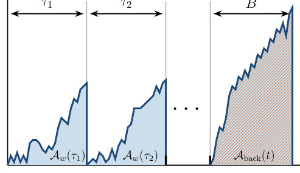
<figcaption class="paper-figure-caption"><b>Fig 1.</b> FIG. 1. Schematic illustration of a single stochastic trajectory under stochastic resetting. The</figcaption>
</figure>
<figure class="paper-figure-card">
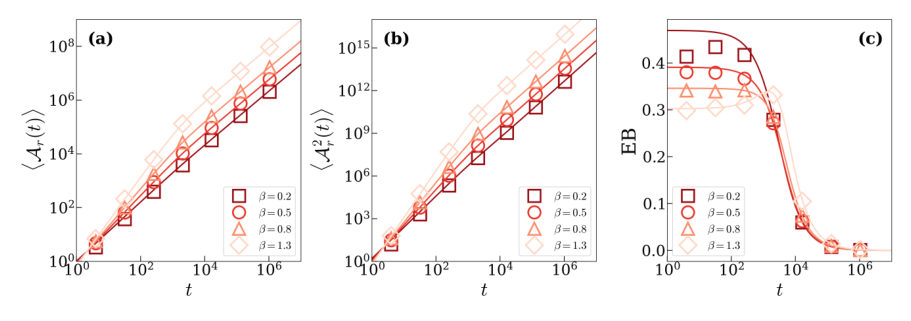
<figcaption class="paper-figure-caption"><b>Fig 2.</b> FIG. 2. Time evolution of the first moment (a), second moment (b), and EB parameter (c) of</figcaption>
</figure>
<figure class="paper-figure-card">
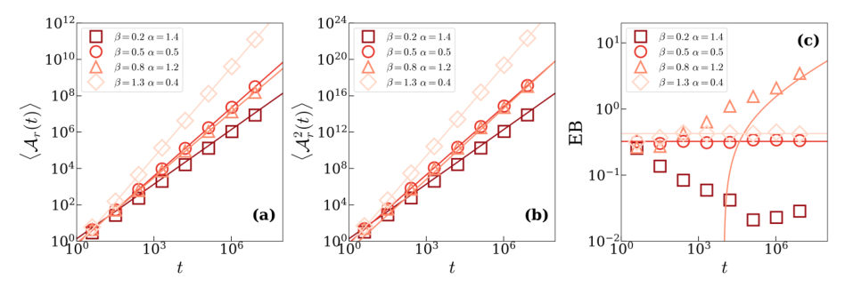
<figcaption class="paper-figure-caption"><b>Fig 3.</b> FIG. 3. Time evolution of the first moment (a), second moment (b), and EB parameter (c) of the</figcaption>
</figure>
<figure class="paper-figure-card">
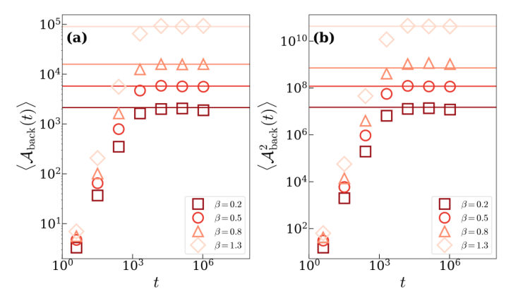
<figcaption class="paper-figure-caption"><b>Fig 4.</b> FIG. 4. First (a) and second (b) moments of Aback(t) under Poissonian resetting with r = 10−3.</figcaption>
</figure>
<figure class="paper-figure-card">
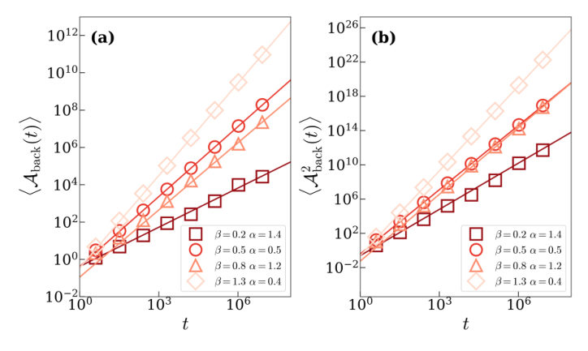
<figcaption class="paper-figure-caption"><b>Fig 5.</b> FIG. 5. First (a) and second (b) moments of Aback(t) for different values of α and β. Symbols</figcaption>
</figure>
</div>

<p><strong>Summary.</strong> This work analyzes how stochastic resetting affects the accumulated absolute area of a particle undergoing anomalous diffusion. Using renewal theory, the authors distinguish between Poissonian and heavy-tailed power-law resetting. They find that while Poissonian resetting always restores ergodicity, power-law resetting leads to complex non-ergodic behavior, predicting a specific ergodic transition only when the system is subdiffusive.</p>
<p><strong>Why it may be interesting.</strong> The interplay between anomalous diffusion (governed by $\beta$) and non-Markovian memory effects (governed by $\alpha$) in determining the long-term statistical behavior (ergodicity) is a rich topic relevant to non-equilibrium statistical mechanics.</p>
<details>
<summary>Detailed structure</summary>
<p><strong>Main problem.</strong> The study investigates the statistical properties and ergodic behavior of the absolute area accumulated under the trajectory of a particle undergoing stochastic resetting while moving via a scaled Brownian motion.</p>
<p><strong>Main result.</strong> The paper reveals that Poissonian resetting always restores ergodicity, whereas power-law resetting exhibits complex regimes, including weak ergodicity breaking and a specific ergodic transition occurring only in the subdiffusive regime at $\alpha = 1+\beta$.</p>
<p><strong>Method.</strong> The analysis employs the renewal formalism and Laplace transforms to derive the lower-order moments of the absolute area, decomposing the total area into contributions from waiting times and recurrence times.</p>
<p><strong>Model / system.</strong> The model involves a particle subject to a scaled Brownian motion (SBM) characterized by exponent $\beta$, interrupted by stochastic resetting events governed by a waiting time distribution with power-law exponent $\alpha$.</p>
<p><strong>Key observables.</strong> Absolute area under the trajectory ($Z_r(t)$), lower-order moments of the area, and the ergodicity breaking parameter (EB).</p>
<p><strong>Important parameters / regimes.</strong> Anomalous diffusion exponent $\beta$ (for SBM) and power-law resetting exponent $\alpha$ (for waiting times).</p>
<p><strong>Assumptions / limitations.</strong> The analysis relies on the renewal formalism and the ability to calculate moments via Laplace transforms, often focusing on the first two moments to diagnose ergodicity.</p>
<p><strong>Figures summary.</strong> Figures schematically illustrate the absolute area decomposition and plot the time evolution of the first two moments and the EB parameter, showing theoretical predictions matching simulations.</p>
<p><strong>Paper structure.</strong> The paper develops the theoretical framework using the renewal formalism, analyzes the contributions of different area components ($   ext{A}<em ext_back="ext{back">{    ext{N}}$, $ ext{A}</em>$), and then derives specific results for Poissonian versus power-law resetting regimes, culminating in the identification of the ergodic transition point.}}$, $  ext{A}_{    ext{max}</p>
</details>
<details>
<summary>Abstract</summary>
<p>We investigate the statistical properties and ergodic behavior of the absolute area below the trajectory of a particle subject to stochastic resetting and moving according to a scaled Brownian motion with exponent $β$. We compare the contributions to the absolute area from the waiting times between resets and the backward recurrence time. Using the renewal formalism we derive the lower-order moments of the absolute area under both Poissonian and heavy-tailed power-law resetting waiting time distributions with exponent $α$. For Poissonian resetting, stochastic interruption suppresses fluctuations, driving the area to be ergodic, regardless of the value of $β$. In contrast, power-law resetting yields a rich spectrum of ergodic regimes. For $0 < α< 1$, the system displays weak ergodicity breaking and the maximum contribution dominates the area accumulated during the waiting times. For $1+β< α< 2$, we unveil an ergodic transition exclusive to the subdiffusive regime at $α=1+β$, where ergodicity is restored. These results clarify the subtle interplay between anomalous diffusion and power-law waiting times between resettings. Our results are tested by numerical simulations exhibiting an excellent agreement.</p>
</details>
<p><sub><a href="#top">↑ back to top</a></sub></p>

<p><a id="paper-2610.19471"></a></p>
<h3 id="retrieving-metrological-information-from-noisy-squeezed-spin-states-via-bayesian-optimization"><a href="http://arxiv.org/abs/2610.19471v1">Retrieving Metrological Information from Noisy Squeezed Spin States via Bayesian Optimization</a></h3>
<p><strong>Authors:</strong> Enze Li, Yunjie Cai, Jingwei Zhang, Emi Yukawa<br>
<strong>Type:</strong> theory · <strong>Category:</strong> quantum information and computing · <strong>PDF:</strong> <a href="https://arxiv.org/pdf/2610.19471v1">https://arxiv.org/pdf/2610.19471v1</a><br>
<strong>Analysis basis:</strong> full PDF text, analyzed in chunks
<strong>Topic relevance:</strong> <code>quantum measurements</code> <strong>3/5</strong> · <code>QC/QI experiment</code> <strong>1/5</strong> · <code>analog quantum simulation</code> <strong>1/5</strong> · <code>quantum optics experiment</code> <strong>1/5</strong></p>
<div class="figure-strip-hint">↔ Scroll figures horizontally</div>
<div class="paper-figures-scroll">
<figure class="paper-figure-card">
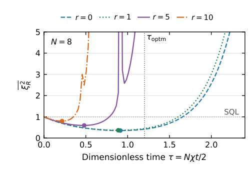
<figcaption class="paper-figure-caption"><b>Fig 1.</b> FIG. 1. Arithmetic mean of the realization-wise Wineland squeezing parameter over 625 disorder samples for N = 8 at r = 0, 1, 5, 10, plotted against τ = Nχt/2. Dots mark the minima of the displayed curves. Finite-size and disorder effects shift these minima away from the ideal asymptotic ref- erence time in Eq. (2). Increasing disorder raises the minima and narrows the interval with ξ2 R &lt; 1; values above 5 lie out- side the displayed range.</figcaption>
</figure>
<figure class="paper-figure-card">
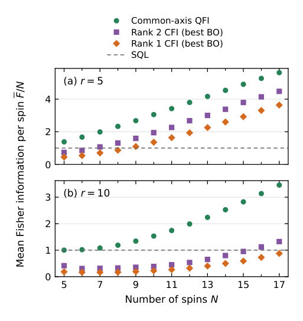
<figcaption class="paper-figure-caption"><b>Fig 2.</b> FIG. 2. Common-axis QFI and achieved CFI per spin for (a) r = 5 and (b) r = 10 at the preparation time in Eq. (2). The CFI markers show the best of 20 full-rotation BO runs for each readout family. The dashed line is the SQL, F/N = 1. Rank-2 readout reaches the SQL crossing at N = 7 for r = 5 and N = 16 for r = 10; the rank-1 reference crosses at N = 9 for r = 5 and remains below the SQL through N = 17 for r = 10. Markers denote the calculated data.</figcaption>
</figure>
<figure class="paper-figure-card">
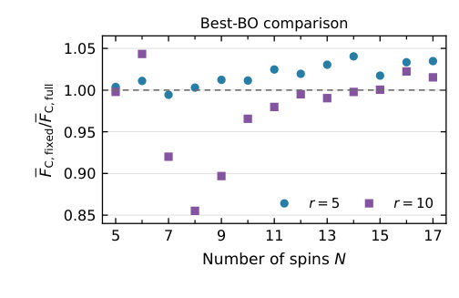
<figcaption class="paper-figure-caption"><b>Fig 3.</b> FIG. 3. Ratio of the best mean CFI ¯F BO C found with the QFI-optimal encoding axis fixed to that found with the full three-parameter rotation. Both searches use Eq. (5) and the same disorder realizations. Ratios above one are possible for finite BO searches, although the exact constrained optimum cannot exceed the unrestricted one.</figcaption>
</figure>
<figure class="paper-figure-card">
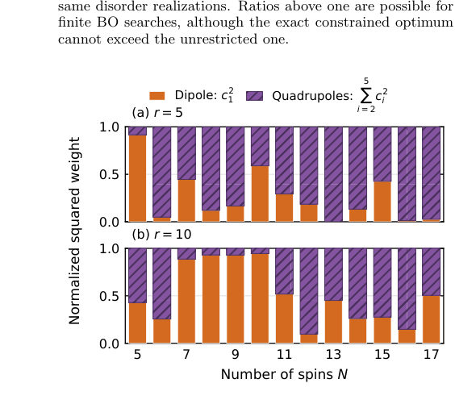
<figcaption class="paper-figure-caption"><b>Fig 4.</b> FIG. 4. Squared normalized dipole and total quadrupole co- efficients of the best full-rotation BO solution for (a) r = 5 and (b) r = 10. The weights sum to one and describe the composition of the observable, not additive shares of its CFI; hatching marks the quadrupole weight. Near-degenerate BO solutions need not have the same composition.</figcaption>
</figure>
</div>

<p><strong>Summary.</strong> This theoretical study develops a method to recover quantum metrological advantage in spin ensembles suffering from static frequency disorder. Using Bayesian Optimization, the authors find that optimizing the readout to include quadrupole terms, beyond simple dipole measurements, significantly boosts the extractable Fisher information. This demonstrates a robust pathway for high-precision quantum sensing in noisy, disordered quantum systems.</p>
<p><strong>Why it may be interesting.</strong> This work provides a concrete, computationally guided protocol for mitigating environmental noise (frequency disorder) in quantum sensing platforms, which is highly relevant for experimental implementations using trapped ions or superconducting qubits.</p>
<details>
<summary>Detailed structure</summary>
<p><strong>Main problem.</strong> The paper addresses how to effectively extract metrological information from squeezed spin states when the system is corrupted by static local frequency disorder.</p>
<p><strong>Main result.</strong> By employing Bayesian Optimization to select a collective readout observable combining dipole and quadrupole operators, the achievable classical Fisher information consistently surpasses the standard quantum limit and outperforms simpler dipole-only readouts.</p>
<p><strong>Method.</strong> The core method involves using Bayesian Optimization to search for the optimal collective readout observable, maximizing the disorder-averaged classical Fisher information calculated from the full measurement-outcome distribution.</p>
<p><strong>Model / system.</strong> The system modeled is an interacting ensemble of spin-1/2 particles ($N$ spins) governed by a Hamiltonian that includes a disorder term ($\delta	ilde{\omega}(i)$) representing static local frequency inhomogeneity.</p>
<p><strong>Key observables.</strong> Classical Fisher Information ($\overline{F}C$), Quantum Fisher Information ($\overline{F}Q$), and the Wineland Squeezing Parameter ($\xi_R^2$).</p>
<p><strong>Important parameters / regimes.</strong> Disorder strength ($r$), number of spins ($N$), and the comparison between rank-1 (dipole) and rank-2 (dipole+quadrupole) readouts.</p>
<p><strong>Assumptions / limitations.</strong> The reported values are the 'best values found' via BO and do not constitute a proof of global maxima; the analysis is restricted to a specific family of collective observables.</p>
<p><strong>Figures summary.</strong> Figures illustrate the comparison of achievable CFI vs. N for different disorder strengths, showing the recovery of metrological advantage (crossing the SQL) with optimized readouts, and comparing the performance of different readout types.</p>
<p><strong>Paper structure.</strong> The paper establishes the problem of disorder-induced decoherence, introduces the BO framework for optimizing collective readouts, presents quantitative results comparing rank-1 vs. rank-2 observables, and concludes by identifying the optimal observable structure.</p>
</details>
<details>
<summary>Abstract</summary>
<p>Frequency inhomogeneity can obscure the metrological advantage of squeezed spin states, making the choice of readout crucial. We study interacting spin-1/2 ensembles with static local frequency disorder and optimize a common collective readout over independent disorder realizations. Using Bayesian optimization of the full measurement-outcome distribution, we identify observables combining dipole and quadrupole operators that yield greater classical Fisher information than the optimized dipole readout considered here. For ensembles of up to 17 spins, their disorder-averaged CFI surpasses the standard quantum limit at both disorder strengths studied, including a regime where the dipole readout remains below it. For the larger ensembles studied, fixing the encoding axis to the direction that maximizes the disorder-averaged quantum Fisher information retains nearly the same performance. These results identify a route to extracting metrological information from frequency-disordered spin ensembles through the choice of collective observable.</p>
</details>
<p><sub><a href="#top">↑ back to top</a></sub></p>

<p><a id="paper-2610.18953"></a></p>
<h3 id="invertible-subalgebras-for-chiral-semion-topological-order"><a href="http://arxiv.org/abs/2610.18953v1">Invertible subalgebras for chiral semion topological order</a></h3>
<p><strong>Authors:</strong> Yu-An Chen, Meng Sun, Nathanan Tantivasadakarn, Zongyuan Wang, Bowen Yang<br>
<strong>Type:</strong> theory · <strong>Category:</strong> other · <strong>PDF:</strong> <a href="https://arxiv.org/pdf/2610.18953v1">https://arxiv.org/pdf/2610.18953v1</a><br>
<strong>Analysis basis:</strong> full PDF text, analyzed in chunks
<strong>Topic relevance:</strong> <code>analog quantum simulation</code> <strong>3/5</strong> · <code>methods for driven-dissipative</code> <strong>1/5</strong> · <code>quantum measurements</code> <strong>1/5</strong></p>
<div class="figure-strip-hint">↔ Scroll figures horizontally</div>
<div class="paper-figures-scroll">
<figure class="paper-figure-card">
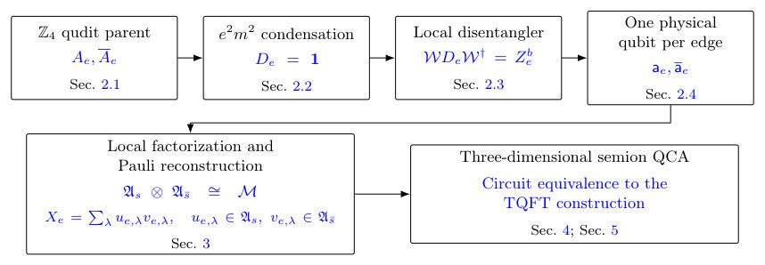
<figcaption class="paper-figure-caption"><b>Fig 1.</b> Figure 1: Construction of the semion ISA and its three-dimensional QCA. In the parent model, each edge e of the square lattice carries one Z4 qudit. The two parent hopping families Ae and Ae commute with one another, and the Hermitian constraints De condense the boson e2m2 of the Z4 toric code. Decomposing each qudit into a and b qubits, the finite-depth circuit W maps De to the ancillary Pauli Zb e. Fixing Zb e = +1 and removing the b qubits leaves one unrestricted physical a qubit per edge. The resulting Hermitian semion and anti-semion hopping operators ae and ae generate As and A¯s, respectively. Together they reconstruct the full physical local operator algebra M through the...</figcaption>
</figure>
<figure class="paper-figure-card">
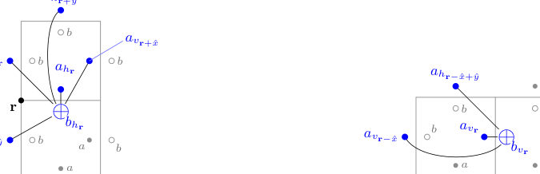
<figcaption class="paper-figure-caption"><b>Fig 2.</b> Figure 3: The local CNOT patterns in V , with both encoded qubits shown on every displayed edge. Filled dots denote a qubits and open circles denote b qubits. Blue markers identify the controls and selected ⊕target. Gray qubits are untouched by these CNOTs. Horizontal-edge pairs place a above and b below the midpoint. Vertical-edge pairs place a left and b right. Both markers belong to that same physical edge. The black vertex is r. The horizontal and vertical targets have five and three controls, respectively, including their own-edge a qubit. Translating these patterns gives Eq. (39).</figcaption>
</figure>
<figure class="paper-figure-card">
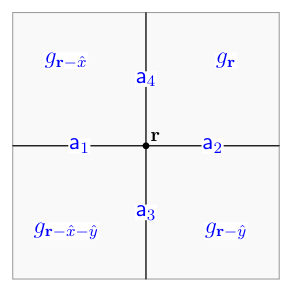
<figcaption class="paper-figure-caption"><b>Fig 3.</b> Figure 4: Reconstructing gr from four neighboring hopping operators. Each edge label denotes the full local unitary aj, including its finite decorations. The face labels identify the loops appearing in the proof. Translating this neighborhood reconstructs every local loop.</figcaption>
</figure>
<figure class="paper-figure-card">
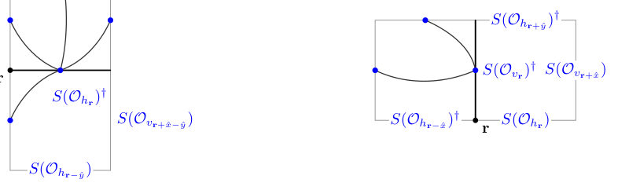
<figcaption class="paper-figure-caption"><b>Fig 4.</b> Figure 5: The local diagonal functionals in Eq. (67), expanded in Eqs. (68) and (69). Edges point right and up. The black vertex is r, and the emphasized edge is e. Each blue edge-midpoint dot denotes the full observable Oe′ on that edge label, and each dark connection supplies CZ(Oe, Oe′). Each phase marker displays its full spectral function S(Oe′) or its adjoint; the marker on the emphasized edge is displaced slightly to reveal its blue dot. These are spectral functions of the specified observables, with no assumption that the Oe′ are independent on-site Paulis.</figcaption>
</figure>
<figure class="paper-figure-card">

<figcaption class="paper-figure-caption"><b>Fig 5.</b> Figure 6: The three dual-lattice rays R, U, L in counterclockwise order, with ℓ= 2. Each crossed-edge label represents a complete order-four hopping operator, including its finite decorations. The two transport histories differ by the exchange phase in Eq. (77). Barred hopping operators give the opposite phase.</figcaption>
</figure>
</div>

<p><strong>Summary.</strong> This paper develops an algebraic framework using Invertible Subalgebras (ISAs) to model chiral semion topological order, circumventing limitations of standard local Hamiltonians. By starting from the Z4 toric code, the authors construct explicit generators for the semion and anti-semion algebras on a lattice. This work yields a concrete realization of a non-Clifford Quantum Cellular Automaton and generalizes the findings to higher dimensions.</p>
<p><strong>Why it may be interesting.</strong> The explicit construction of non-Clifford QCA and the realization of exotic topological order using algebraic structures like ISAs provides concrete, implementable models for quantum computation beyond standard Pauli constraints.</p>
<details>
<summary>Detailed structure</summary>
<p><strong>Main problem.</strong> Chiral topological order is incompatible with standard local Hamiltonians on finite-dimensional Hilbert spaces, necessitating an alternative algebraic framework.</p>
<p><strong>Main result.</strong> The authors construct and characterize Invertible Subalgebras (ISAs) supporting chiral semions, demonstrating that these algebras, along with their commutants, generate all local operators on the lattice.</p>
<p><strong>Method.</strong> The construction uses a condensation procedure starting from the Z4 toric code, followed by disentangling circuits to realize the chiral algebras on physical qubits.</p>
<p><strong>Model / system.</strong> The model is a square lattice system where the construction is based on the Z4 toric code, leading to an ISA supporting chiral semions and its anti-semion commutant on one qubit per edge.</p>
<p><strong>Key observables.</strong> The local operators generated by the semion and anti-semion algebras, and the resulting three-dimensional non-Clifford Quantum Cellular Automaton (QCA).</p>
<p><strong>Important parameters / regimes.</strong> The spatial dimension $d=4k-2$, and the specific topological charge structure related to the semion ($s 	imes s = 1$ with topological spin $i$).</p>
<p><strong>Assumptions / limitations.</strong> The construction assumes that the two chiral algebras are mutual commutants, and the results are stated for the infinite plane or sufficiently large periodic lattices.</p>
<p><strong>Figures summary.</strong> Figure 1 illustrates the construction pathway: from the parent Z4 qudit model, through boson condensation, the disentangling circuit, to the final physical qubits carrying the two chiral algebras. Figure 2 details the lattice conventions.</p>
<p><strong>Paper structure.</strong> The paper details the semion ISA construction (Section 2), the local generation proof (Section 3), the derivation of the QCA via pumping (Section 4), the equivalence to TQFT results (Section 5), and generalizations to higher dimensions and U(1) ISA (Sections 6, F, G).</p>
</details>
<details>
<summary>Abstract</summary>
<p>Chiral topological order is incompatible with strictly two-dimensional local commuting-projector Hamiltonians on finite-dimensional tensor-product Hilbert spaces. Invertible subalgebras (ISAs) provide an alternative framework. We construct an ISA supporting chiral semions, together with its anti-semion commutant, on a square lattice with one qubit per edge. We give explicit non-Pauli generators for both algebras and prove that together they generate all local operators on the Hilbert space. Starting from the $\mathbb{Z}_4$ toric code, we condense the boson $e^2m^2$ and identify the semion and anti-semion algebras. We then decompose each $\mathbb{Z}_4$ qudit into two qubits and use a finite-depth circuit to disentangle one qubit per edge fixed by the condensation constraints. Pumping the semion ISA along the $z$ direction defines an explicit three-dimensional non-Clifford quantum cellular automaton (QCA). We show that pumping eight times is equivalent to a translation followed by a finite-depth quantum circuit with ancillary qubits. We also give an explicit finite-depth circuit relating this construction to the semion QCA previously obtained from topological quantum field theory. A similar condensation construction yields a $U(1)_4$ ISA on a square lattice. Together with the semion and earlier odd-prime ISAs, finite stacking realizes every pointed Witt class of bosonic Abelian anyon theories. Finally, we extend both constructions to all spatial dimensions $d=4k{-}2$, with one qubit or $\mathbb{Z}_4$ qudit on each $(2k{-}1)$-cell for the semion or $U(1)_4$ ISA, respectively.</p>
</details>
<p><sub><a href="#top">↑ back to top</a></sub></p>

<p><a id="paper-2610.19888"></a></p>
<h3 id="maximum-likelihood-neural-networks-and-posterior-mean-for-inferring-fractional-brownian-motion-parameters"><a href="http://arxiv.org/abs/2610.19888v1">Maximum likelihood, neural networks and posterior mean for inferring fractional Brownian motion parameters</a></h3>
<p><strong>Authors:</strong> Daniel S. Han, Vaishnavi Ananthanarayanan, Matthew J. Simpson<br>
<strong>Type:</strong> both · <strong>Category:</strong> statistical mechanics · <strong>PDF:</strong> <a href="https://arxiv.org/pdf/2610.19888v1">https://arxiv.org/pdf/2610.19888v1</a><br>
<strong>Analysis basis:</strong> full PDF text, analyzed in chunks
<strong>Topic relevance:</strong> <code>quantum measurements</code> <strong>3/5</strong> · <code>methods for driven-dissipative</code> <strong>2/5</strong></p>
<div class="figure-strip-hint">↔ Scroll figures horizontally</div>
<div class="paper-figures-scroll">
<figure class="paper-figure-card">
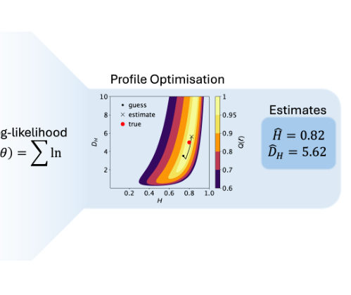
<figcaption class="paper-figure-caption"><b>Fig 1.</b> Figure 1: The parameter estimation process from observation (left) to final parameter estimates (right).</figcaption>
</figure>
<figure class="paper-figure-card">
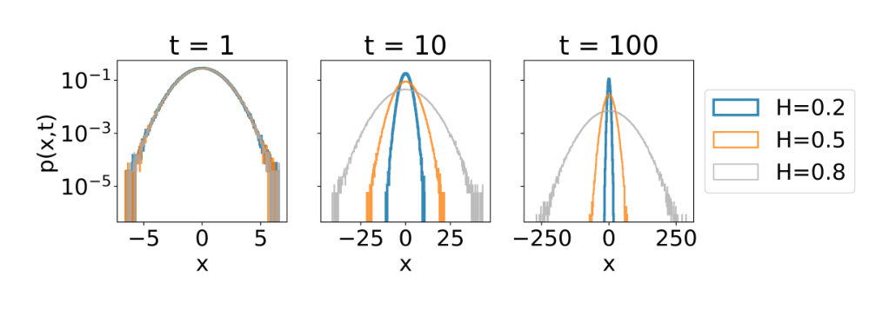
<figcaption class="paper-figure-caption"><b>Fig 2.</b> Figure 2: Histograms showing the densities of subdiffusive fBM (H = 0.2), diffusion (H = 0.5) and superdiffusive fBM (H = 0.8) at time points t = 1, 10 and 100 with DH = 1.</figcaption>
</figure>
<figure class="paper-figure-card">

<figcaption class="paper-figure-caption"><b>Fig 3.</b> Figure 3: Plots at t = 10 of the mean observed count SN(x, t) + λ (blue line) with ±1.96 standard deviations of the Poisson noise model (9) (blue shaded), where N(x, t) is given by (12) with DH = 1 and H = 0.2, and one realisation of N o(x, t) (orange line), with S = 1 and λ = 1.</figcaption>
</figure>
<figure class="paper-figure-card">
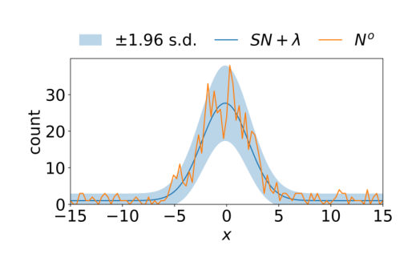
<figcaption class="paper-figure-caption"><b>Fig 4.</b> Figure 4 shows the loglikelihood landscapes (11) when the observed density is taken for a single time point (t = 100). If we denote the true parameter values as D∗ H and H∗, then the parameters are non-identifiable as any pair of values (H, DH) that satisfies DHt2H = D∗ Ht2H∗= constant, (14)</figcaption>
</figure>
<figure class="paper-figure-card">
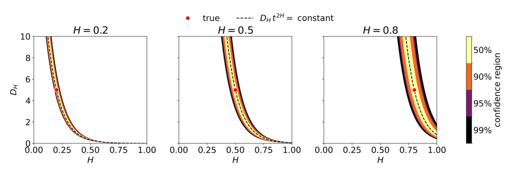
<figcaption class="paper-figure-caption"><b>Fig 5.</b> Figure 4: The loglikelihood landscapes for fBM PDFs with Poisson noise (11) against DH and H, given N o(x, t) at only a single time point t = 100 with ν = 500, S = 1 and λ = 0, in bins of width ∆x = 0.4 over |x| ≤20. The landscape shown is for a single realisation of the Poisson noise model (9), so ℓmax is specific to this realisation and may not lie at the true parameters. The colours show the loglikelihood relative to that maximum, ℓ−ℓmax. The coloured regions show 50, 90, 95 and 99% confidence regions for the parameters (H, DH), i.e. the sets {θ : ℓmax −ℓ(θ) ≤1</figcaption>
</figure>
</div>

<p><strong>Summary.</strong> This work develops advanced statistical methods to characterize anomalous diffusion using Fractional Brownian Motion parameters ($H$ and $D_H$). By comparing MLE against neural network approximations of the posterior mean, the authors demonstrate that intracellular cargoes do not move in a single diffusive regime but rather switch dynamically between sub- and superdiffusive states over time.</p>
<p><strong>Why it may be interesting.</strong> While the core is statistical inference, the application to anomalous diffusion in biological systems connects statistical physics (non-equilibrium dynamics) with complex biological processes, which is relevant to understanding energy dissipation and transport in soft matter.</p>
<details>
<summary>Detailed structure</summary>
<p><strong>Main problem.</strong> The paper aims to jointly estimate the parameters ($H$ and $D_H$) of Fractional Brownian Motion (fBM) from diverse experimental data, including density measurements and single-particle trajectories.</p>
<p><strong>Main result.</strong> Intracellular cargoes exhibit dynamic switching between subdiffusive and superdiffusive regimes over time, rather than maintaining a fixed mode of motion. The combination of posterior mean for $H$ and profile likelihood for $D_H$ yields the best parameter estimates.</p>
<p><strong>Method.</strong> The authors employ Maximum Likelihood Estimation (MLE) and compare it against using a Neural Network (NN) to approximate the posterior mean of the Hurst exponent ($H$).</p>
<p><strong>Model / system.</strong> The underlying physical process is anomalous diffusion, modeled by fBM, characterized by the Hurst exponent $H$ and a diffusion coefficient $D_H$. The analysis is applied to intracellular cargo movement in living cells (MRC5 and HeLa).</p>
<p><strong>Key observables.</strong> Mean-Squared Displacement (MSD), local density measurements (Poisson noise), and the posterior probability that trajectory windows are subdiffusive ($H < 1/2$) or superdiffusive ($H > 1/2$).</p>
<p><strong>Important parameters / regimes.</strong> Hurst exponent ($H \in (0, 1)$) and generalized diffusion coefficient ($D_H > 0$).</p>
<p><strong>Assumptions / limitations.</strong> Density likelihoods are assumed to be independent across time points, which is noted as a limitation. The analysis also assumes the fBM model accurately describes the underlying transport.</p>
<p><strong>Figures summary.</strong> Figures illustrate the parameter estimation process from density observations, show PDFs for different fBM regimes, and display histograms confirming the high proportion of time-varying sub/superdiffusive windows in cell trajectories.</p>
<p><strong>Paper structure.</strong> The paper first establishes the theoretical framework for parameter estimation from density data, highlighting parameter identifiability issues. It then details the comparison between MLE and NN-approximated posterior means. Finally, it applies these methods to analyze real intracellular cargo trajectories, concluding that motion is highly heterogeneous.</p>
</details>
<details>
<summary>Abstract</summary>
<p>Fractional Brownian motion (fBM) is a model of anomalous diffusion parameterised by a Hurst exponent $H \in (0,1)$ and a generalised diffusion coefficient $D_H > 0$. We jointly estimate $H$ and $D_H$ using maximum likelihood (MLE) from density measurements with Poisson counting noise and single-particle trajectory with Gaussian localisation error. We show that one density measurement in time cannot infer both $H$ and $D_H$ and that several time points are needed, which matters most for inference precision. For trajectories, we show that a neural network trained with a squared error loss approximates the posterior mean of $H$, which can be computed exactly at negligible cost. Paired with the profile-likelihood estimate of $D_H$, the posterior mean has the lowest root mean squared error in both $H$ and $D_H$, except near $H=0$ and $H=1$ where MLE estimates $H$ better. In vesicle trajectories from two cell types, $H$ and $D_H$ form a continuum rather than distinct modes of motion. The posterior probability that each window within a track is subdiffusive or superdiffusive shows that $26\%$ of MRC5 fibroblast and $21\%$ of HeLa vesicle trajectories contain both subdiffusive and superdiffusive windows, against $2\%$ and $7\%$ expected from estimation uncertainty alone. Intracellular cargoes therefore switch between subdiffusion and superdiffusion over time rather than forming populations with fixed $H$.</p>
</details>
<p><sub><a href="#top">↑ back to top</a></sub></p>

<p><a id="paper-2610.18954"></a></p>
<h3 id="optimal-disorder-strength-for-approximate-unitary-math341math-designs-in-spin-chains"><a href="http://arxiv.org/abs/2610.18954v1">Optimal Disorder Strength for Approximate Unitary $k$-Designs in Spin Chains</a></h3>
<p><strong>Authors:</strong> Tian-Gang Zhou, Yi-Neng Zhou, Thierry Giamarchi, Julian Sonner<br>
<strong>Type:</strong> theory · <strong>Category:</strong> disordered systems and neural networks · <strong>PDF:</strong> <a href="https://arxiv.org/pdf/2610.18954v1">https://arxiv.org/pdf/2610.18954v1</a><br>
<strong>Analysis basis:</strong> full PDF text, analyzed in chunks
<strong>Topic relevance:</strong> <code>analog quantum simulation</code> <strong>3/5</strong> · <code>Keldysh / 2PI / non-Gaussian methods</code> <strong>2/5</strong></p>
<div class="figure-strip-hint">↔ Scroll figures horizontally</div>
<div class="paper-figures-scroll">
<figure class="paper-figure-card">
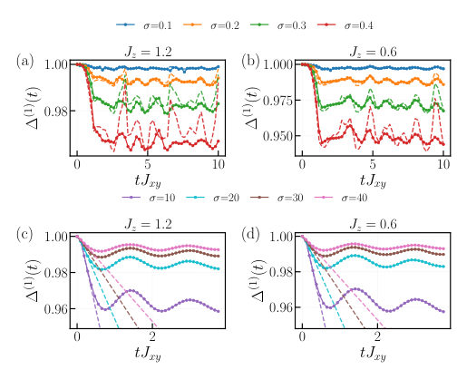
<figcaption class="paper-figure-caption"><b>Fig 1.</b> FIG. 1. Disorder-averaged first-moment gap ∆(1)(t) of an open XXZ chain with L = 6 and Jxy = 1, restricted to the Sz = 0 sector. Solid lines with markers show Monte Carlo results and dashed lines show the perturbative predictions. (a,b) Weak disorder, σ = 0.1, 0.2, 0.3, 0.4, for Jz = 1.2 and 0.6, respectively, compared with Eq. (8). (c,d) Strong disor- der, σ = 10, 20, 30, 40, for the same two values of Jz, com- pared with Eq. (15). The leading strong-disorder decay is independent of Jz. At later times, the numerical gaps fluc- tuate around nonzero plateaus, whereas the strong-disorder Markovian prediction continues to decrease.</figcaption>
</figure>
<figure class="paper-figure-card">
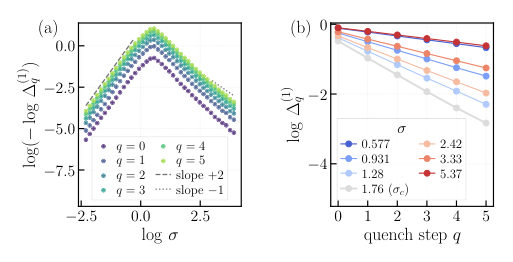
<figcaption class="paper-figure-caption"><b>Fig 2.</b> FIG. 2. Disorder dependence and multi-quench suppression of the first-moment gap for the open XXZ chain with L = 6, Jxy = 1, Jz = 0.6, and Sz = 0, using 5000 disorder realiza- tions. Each gap is sampled at the last recorded time within the corresponding evolution segment. (a) ln(−ln ∆(1) q ) ver- sus ln σ for q = 0, . . . , 5. The dashed and dotted guides have slopes +2 and −1, respectively, corresponding to the weak- and strong-disorder scalings in Eqs. (9) and (16). (b) ln ∆(1) q versus q at the indicated disorder strengths. The approxi- mately linear decrease is consistent with exponential suppres- sion bounded by Eq. (18), with the fastest suppression near σc ≃1.76. Lines connect the...</figcaption>
</figure>
<figure class="paper-figure-card">
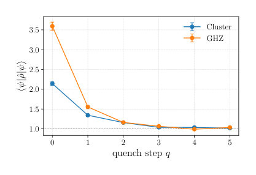
<figcaption class="paper-figure-caption"><b>Fig 3.</b> FIG. 3. Classical-shadow fidelity estimation using the multi- quench XXZ ensemble. The cluster state (blue) and GHZ state (orange) are encoded in Ll = 5 logical qubits using L = 10 physical spins in the Sz = 0 sector. Markers show ⟨ψ| ˆρ |ψ⟩. Error bars denote one standard error over 5000 disorder realizations per q, and the horizontal dotted line marks the true fidelity of unity. The upward bias at q = 0 is strongly reduced by additional quenches, with both esti- mates approaching unity by q ≃4. Parameters are Jxy = 1, Jz = 0.6, σ = 1.76 ≃σc, and total evolution time t = 30. The q switches occur at ta = 5a for a = 1, . . . , q.</figcaption>
</figure>
<figure class="paper-figure-card">
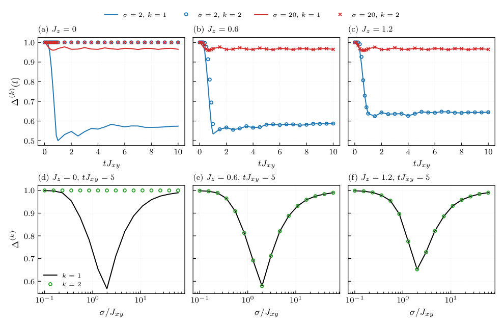
<figcaption class="paper-figure-caption"><b>Fig 4.</b> FIG. 4. First and second-moment gaps of the disordered XXZ chain with L = 4, open boundaries, Sz = 0 (d = 6), and Jxy = 1, using 104 disorder realizations per point and the same Pauli convention as the other numerical figures. Lines show ∆(1) and open markers show ∆(2). (a)–(c) Time dependence at σ = 2 (blue) and σ = 20 (red) for Jz = 0, 0.6, and 1.2. (d)–(f) Disorder dependence at tJxy = 5. At the free-fermion point Jz = 0, ∆(2) = 1 at all times and disorder strengths, whereas ∆(1) decays. For Jz ̸= 0, the two gaps coincide after a short transient.</figcaption>
</figure>
<figure class="paper-figure-card">
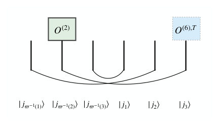
<figcaption class="paper-figure-caption"><b>Fig 5.</b> FIG. 5. Graphical representation of the replica operator identity in Eq. (C3) for k = 3 and the permutation ϖ−1(1) = 2, ϖ−1(2) = 3, ϖ−1(3) = 1. The connecting lines pair forward and backward replicas in |Vd(ϖ)⟩⟩. Acting with O on forward replica 2 is equivalent to acting with its transpose on backward replica 6, giving O(2)|Vd(ϖ)⟩⟩= O(6),T |Vd(ϖ)⟩⟩.</figcaption>
</figure>
</div>

<p><strong>Summary.</strong> This theoretical work analyzes how disorder affects the ability of a quantum spin chain to approximate a unitary k-design. By developing a perturbative theory for the moment gap, the authors find that the gap exhibits non-monotonic behavior, pinpointing an optimal disorder strength $\sigma_c$. This suggests that strong disorder can localize the system, hindering both thermalization and the formation of perfect quantum designs.</p>
<p><strong>Why it may be interesting.</strong> The work connects the concept of unitary quantum design (a tool in quantum information) to the physics of localization in disordered quantum many-body systems, providing a quantitative measure ($\sigma_c$) for optimal quantum simulation parameters.</p>
<details>
<summary>Detailed structure</summary>
<p><strong>Main problem.</strong> The paper seeks to determine the optimal intermediate disorder strength required for a disordered spin chain to approximate a unitary k-design, as strong disorder can localize the system and suppress dynamics.</p>
<p><strong>Main result.</strong> The moment gap exhibits non-monotonic scaling, suggesting an optimal disorder strength $\sigma_c \sim J_{xy}$, and a multi-quench protocol can suppress the gap exponentially.</p>
<p><strong>Method.</strong> The authors developed a perturbative theory using a replica-operator expansion and analyzed the moment gap $\Delta^{(k)}$ in both weak and strong disorder regimes.</p>
<p><strong>Model / system.</strong> The system is a one-dimensional spin chain governed by a disordered XXZ Hamiltonian, $H = H_0 + H_Z$, analyzed in a fixed-magnetization sector.</p>
<p><strong>Key observables.</strong> The moment gap $\Delta^{(k)}$, which quantifies the deviation of the k-th moment operator from the Haar ensemble.</p>
<p><strong>Important parameters / regimes.</strong> Disorder strength ($\sigma$), interaction energy scale ($J_{xy}$), and the number of quenches ($q$).</p>
<p><strong>Assumptions / limitations.</strong> The perturbative analysis is valid in specific regimes ($\sigma \ll J_{xy}$ or $\sigma \gg J_{xy}$), and the analysis relies on the moment gap as the primary diagnostic.</p>
<p><strong>Figures summary.</strong> Figures illustrate the disorder-averaged first-moment gap $\Delta^{(1)}(t)$ across weak and strong disorder regimes, confirming the predicted scaling laws and the optimal disorder strength $\sigma_c$.</p>
<p><strong>Paper structure.</strong> The paper develops the perturbative theory for the moment gap, derives the distinct scaling laws for weak ($\ln \Delta^{(k)} \sim -\sigma^2$) and strong ($\ln \Delta^{(k)} \sim -1/\sigma$) disorder, and then demonstrates the utility of a multi-quench protocol for suppressing this gap.</p>
</details>
<details>
<summary>Abstract</summary>
<p>Quantum simulators with disordered spin Hamiltonians offer a natural route to Haar-like unitary ensembles, but face a competition. Disorder enhances randomness, yet strong disorder suppresses dynamics and localizes the system in the computational basis. This suggests an optimal intermediate disorder strength for approximating a unitary $k$-design, which has so far been identified mainly empirically. Here, we develop a perturbative theory for the moment gap $Δ^{(k)}$, the deviation of the $k$-th moment operator from its Haar value, for the full spectrum of the interacting XXZ chain in a fixed-magnetization sector. We find the non-monotonic asymptotic scalings $\ln Δ^{(k)}\sim -σ^2$ at weak disorder and $\ln Δ^{(k)}\sim -1/σ$ at strong disorder, whose crossover sets an optimal disorder strength $σ_c\sim J_{xy}$, where $J_{xy}$ is the energy scale of the non-random interaction. We further show that a multi-quench protocol further suppresses the gap exponentially in the number of quenches. Numerical simulations confirm both scalings and this exponential suppression, and we demonstrate the usefulness of the protocol for classical shadow tomography. This work suggests that strong disorder may block both thermalization and the formation of unitary designs through a common localization mechanism.</p>
</details>
<p><sub><a href="#top">↑ back to top</a></sub></p>

<p><a id="paper-2610.19675"></a></p>
<h3 id="transport-information-beyond-strong-eigenstate-thermalization"><a href="http://arxiv.org/abs/2610.19675v1">Transport Information Beyond Strong Eigenstate Thermalization</a></h3>
<p><strong>Authors:</strong> Avadhut V. Purohit, Harshit Sharma, Udaysinh T. Bhosale<br>
<strong>Type:</strong> theory · <strong>Category:</strong> statistical mechanics · <strong>PDF:</strong> <a href="https://arxiv.org/pdf/2610.19675v1">https://arxiv.org/pdf/2610.19675v1</a><br>
<strong>Analysis basis:</strong> full PDF text, analyzed in chunks
<strong>Topic relevance:</strong> <code>scars &amp; prethermalization</code> <strong>3/5</strong> · <code>analog quantum simulation</code> <strong>1/5</strong> · <code>non-equilibrium universality</code> <strong>1/5</strong></p>
<div class="figure-strip-hint">↔ Scroll figures horizontally</div>
<div class="paper-figures-scroll">
<figure class="paper-figure-card">
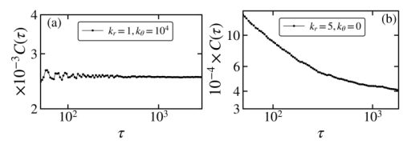
<figcaption class="paper-figure-caption"><b>Fig 1.</b> FIG. 1. Correlation functions 𝐶(𝜏) for the DKT with initial condition (𝜃0 = 1.1, 𝜙0 = 0.3). (a) (𝑘𝑟= 1, 𝑘𝜃= 104): operationally mean- ergodic, nonmixing regime with persistent structured correlations. (b) (𝑘𝑟= 5, 𝑘𝜃= 0): regime consistent with weak mixing, charac- terized by algebraically decaying correlations and strongly reduced long-time correlation amplitudes.</figcaption>
</figure>
<figure class="paper-figure-card">
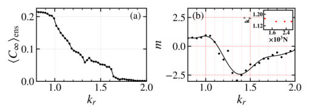
<figcaption class="paper-figure-caption"><b>Fig 2.</b> FIG. 2. (a) Long-time correlation amplitudes 𝐶∞averaged over the phase space as functions of 𝑘𝑟. (b) SRC obtained from finite-size scaling of the EE for system sizes in the range 𝑁∈[3000, 4000]. For each value of 𝑘𝑟, the slope 𝑚is extracted from a linear fit to 11 equispaced system sizes after resolving the parity sectors and computing the EE for a half bipartition of the system. Inset: The crossover point 𝑘∗ 𝑟, defined by 𝑚= 0, is extracted from different finite-size windows. It remains largely stable as the system size increases. Here, 𝑘𝜃= 0 for both panels.</figcaption>
</figure>
<figure class="paper-figure-card">
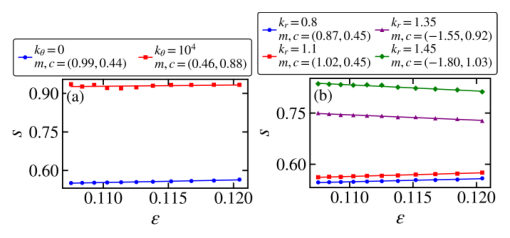
<figcaption class="paper-figure-caption"><b>Fig 3.</b> FIG. 3. Normalized EE 𝑠versus 𝜀. (a) For fixed 𝑘𝑟= 1, increasing 𝑘𝜃preserves positive SRC (𝑚&gt; 0). (b) For fixed 𝑘𝜃= 0, increasing 𝑘𝑟drives a sign reversal of the SRC near 𝑘𝑟≈1.20.</figcaption>
</figure>
<figure class="paper-figure-card">
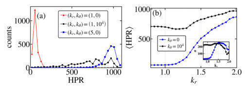
<figcaption class="paper-figure-caption"><b>Fig 4.</b> FIG. 4. (a) HPR distributions for three representative cases. The HPR is concentrated at low values for (𝑘𝑟= 1, 𝑘𝜃= 0), spreads over a wide range for (𝑘𝑟= 1, 𝑘𝜃= 104), and is concentrated at high values for (𝑘𝑟= 5, 𝑘𝜃= 0). (b) Average HPR of the Floquet eigenstates as a function of 𝑘𝑟for spin 𝑗= 1000. Inset: Standard deviation of the HPR over all Floquet eigenstates.</figcaption>
</figure>
</div>

<p><strong>Summary.</strong> This paper uses the Double Kicked Top model to probe how quantum eigenstates encode information about classical transport regimes beyond standard thermalization predictions. By analyzing the finite-size correction to the entanglement entropy, the authors define a coefficient that robustly tracks the transition between nonmixing and weak mixing dynamics. This demonstrates that quantum structure can reveal subtle details about classical dynamics otherwise hidden in the bulk thermodynamic limit.</p>
<p><strong>Why it may be interesting.</strong> This work provides a powerful, quantifiable diagnostic tool—the SRC—to distinguish between different types of dynamical organization (e.g., integrable vs. chaotic) in quantum systems, going beyond simple thermalization measures.</p>
<details>
<summary>Detailed structure</summary>
<p><strong>Main problem.</strong> The study investigates whether quantum eigenstates retain information about underlying classical transport mechanisms (e.g., nonmixing vs. weak mixing) beyond the leading thermodynamic predictions of Strong Eigenstate Thermalization (ETH).</p>
<p><strong>Main result.</strong> The finite-size structure, quantified by the Structure Refinement Coefficient (SRC), successfully tracks the transition between different classical transport regimes, revealing signatures invisible in the thermodynamic-limit entropy.</p>
<p><strong>Method.</strong> The analysis uses finite-size scaling of the bipartite entanglement entropy (EE) to extract the SRC, which is then correlated with the long-time decay of classical correlation functions.</p>
<p><strong>Model / system.</strong> The research employs the Double Kicked Top (DKT) model, a system whose dynamics can be tuned to exhibit regimes ranging from operationally mean-ergodic nonmixing transport to dynamics consistent with weak mixing transport.</p>
<p><strong>Key observables.</strong> Normalized Entanglement Entropy (EE), Structure Refinement Coefficient (SRC, $m$), and long-time classical correlation amplitudes ($\langle C_{O,\infty} 
angle_{	ext{ens}}$).</p>
<p><strong>Important parameters / regimes.</strong> Control parameters $k_r$ and $k_	heta$, which tune the system between nonmixing, weak mixing, and coexistence transport regimes.</p>
<p><strong>Assumptions / limitations.</strong> The analysis assumes that the leading finite-size correction to the normalized EE follows a linear scaling form, $s(N) = c + m\epsilon(N) + O(\epsilon(N)^2)$.</p>
<p><strong>Figures summary.</strong> Figures illustrate the persistence of classical correlations in different regimes (nonmixing vs. weak mixing) and show the SRC ($m$) exhibiting a stable sign reversal as the system parameters cross a critical point.</p>
<p><strong>Paper structure.</strong> The paper first establishes the diagnostic tools by analyzing classical correlations in the DKT. It then applies these tools to the quantum entanglement entropy, showing that the SRC coefficient $m$ serves as a sensitive probe of the underlying classical dynamics, even when the thermodynamic entropy $c$ saturates.</p>
</details>
<details>
<summary>Abstract</summary>
<p>Strong eigenstate thermalization (ETH) in operationally mean-ergodic, non-chaotic systems provides an opportunity to investigate whether Floquet eigenstates retain information about classical transport beyond their leading thermodynamic behavior. We address this question using the double kicked top (DKT), which exhibits nonmixing transport and dynamics consistent with weak mixing transport under variation of its control parameters. We show that the coefficient $m$ of the leading finite-size correction to the normalized eigenstate entanglement entropy (EE) $s$ tracks the restructuring between these transport regimes even when the thermodynamic-limit entropy $c$ becomes nearly insensitive to them. This coefficient $m$ is positive for nonmixing transport and negative when dynamics consistent with weak mixing transport dominate. The coefficient's sign reversal in the coexistence regime remains stable as the semiclassical resolution increases. Our results demonstrate that finite-size eigenstate structure can encode signatures of classical transport that are invisible in the thermodynamic-limit entropy, providing an eigenstate-based diagnostic of dynamical organization beyond the leading thermodynamic behavior associated with strong ETH.</p>
</details>
<p><sub><a href="#top">↑ back to top</a></sub></p>

<p><a id="paper-2610.20132"></a></p>
<h3 id="a-low-cost-compact-muon-detector-for-millikelvin-operation"><a href="http://arxiv.org/abs/2610.20132v1">A low-cost compact muon detector for millikelvin operation</a></h3>
<p><strong>Authors:</strong> Tengiz Ibrayev, Danish Khan, Alex Herscovics, Komal Kataruka, Matilda Lawton, Sandhya Sharma, Steven Waddy, Laura Manenti<br>
<strong>Type:</strong> experiment · <strong>Category:</strong> other · <strong>PDF:</strong> <a href="https://arxiv.org/pdf/2610.20132v1">https://arxiv.org/pdf/2610.20132v1</a><br>
<strong>Analysis basis:</strong> full PDF text, analyzed in chunks
<strong>Topic relevance:</strong> <code>quantum measurements</code> <strong>3/5</strong> · <code>Full counting statistics</code> <strong>1/5</strong></p>
<div class="figure-strip-hint">↔ Scroll figures horizontally</div>
<div class="paper-figures-scroll">
<figure class="paper-figure-card">
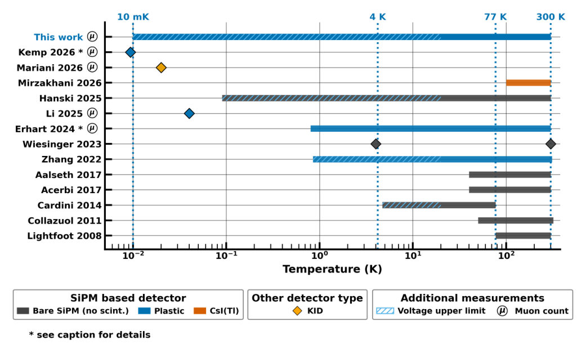
<figcaption class="paper-figure-caption"><b>Fig 1.</b> FIG. 1. Summary of previous studies of SiPMs, scintillator–SiPM detectors and KIDs at cryogenic temperatures, together with this work. The y-axis lists the studies, and the x-axis shows the temperatures at which the detectors were operated. Bars indicate extended temperature ranges, while diamonds mark measurements at discrete temperatures. Colors identify the detector type and, where applicable, the scintillator material. The hatching on the bars indicates the temperature ranges over which the upper-limit voltage, VUL, was measured (Section II). The circled µ ○identifies studies that used coincidence measurements for muon counting. This work covers temperatures from 300 K to 10 mK and...</figcaption>
</figure>
<figure class="paper-figure-card">
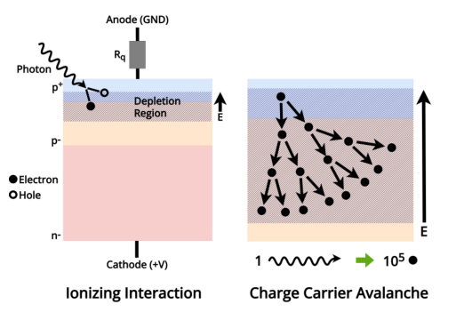
<figcaption class="paper-figure-caption"><b>Fig 2.</b> FIG. 2. Operating principle of a SPAD, the main element of a SiPM microcell. Left: a free charge carrier is generated in the depletion region by an absorbed photon. The electric field E in the depletion region separates the electron and the hole. Right: above the breakdown voltage, the accelerated carrier generates further electron–hole pairs through impact ionization, producing an avalanche of order 105 carriers from a single initial carrier.</figcaption>
</figure>
<figure class="paper-figure-card">
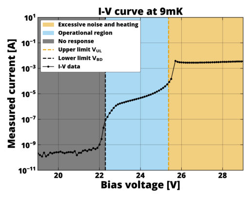
<figcaption class="paper-figure-caption"><b>Fig 3.</b> FIG. 3. Current drawn by a SiPM as a function of bias volt- age under dim blue LED illumination at 9 mK (the curve is a linear interpolation of the data points). In the gray region, below the breakdown voltage VBD (black dashed line), the current is small and the SiPM is not operating. The blue re- gion indicates the operating range, where the photocurrent is proportional to the incident light. Above VUL (orange dashed line), in the orange region, the current rises sharply until it reaches the compliance limit set on the SMU, resulting in ex- cessive heating and unstable refrigerator operation.</figcaption>
</figure>
<figure class="paper-figure-card">
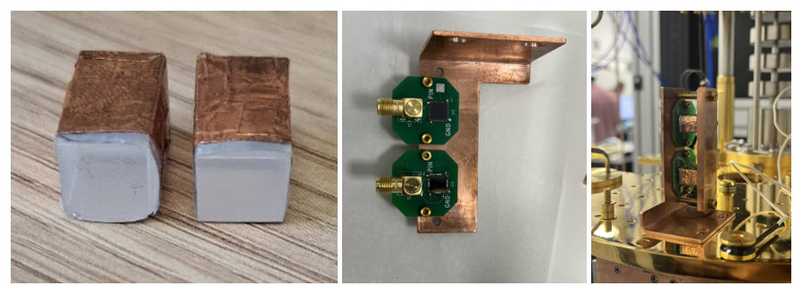
<figcaption class="paper-figure-caption"><b>Fig 4.</b> FIG. 4. Photographs of the muon detector and its components. Left: Two plastic scintillators wrapped in ESR film and copper tape. Center: SiPMs mounted to PCBs screwed to a copper bracket. Right: The fully assembled detector, ready to be mounted to the mixing chamber of the dilution refrigerator.</figcaption>
</figure>
<figure class="paper-figure-card">
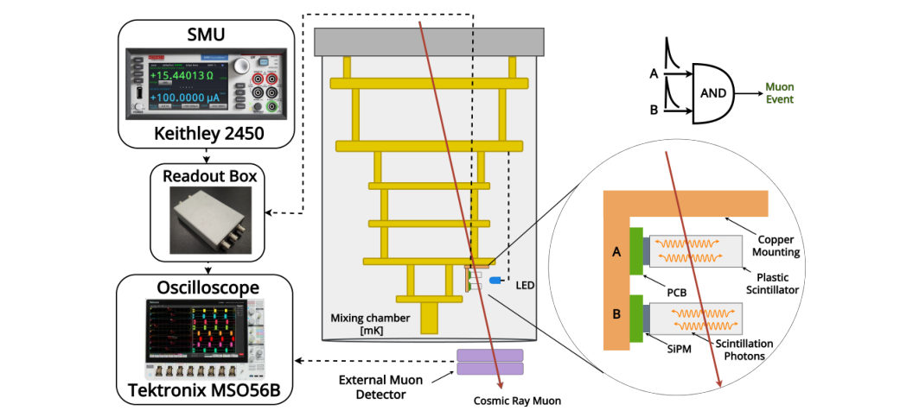
<figcaption class="paper-figure-caption"><b>Fig 5.</b> FIG. 5. Experimental setup for the muon rate measurements. The Keithley 2450 SMU biases the SiPMs through the readout box, which also decouples the output signals, and the signals are recorded on the oscilloscope. The detector is mounted on the mixing chamber of the dilution refrigerator, and two external muon detectors are placed below the cryostat. Their signals are recorded together with those of the internal detector to identify quadruple coincidences and confirm that the internal coincidences are caused by muons. The inset shows the cryogenic muon detector, with the plastic scintillators coupled to SiPMs mounted on PCBs, and the AND logic used to trigger on coincidences. In some runs,...</figcaption>
</figure>
</div>

<p><strong>Summary.</strong> This paper presents a low-cost muon detector designed to veto background noise in superconducting quantum devices. By operating the detector down to millikelvin temperatures, the researchers observed a novel double-pulse signature. This signature's behavior strongly correlates with the phase diagram of a Type-II superconductor, suggesting a superconducting mechanism within the detector's readout electronics.</p>
<p><strong>Why it may be interesting.</strong> The study provides an experimental link between high-energy particle detection (muons) and fundamental condensed matter phenomena (superconductivity) in a highly sensitive quantum measurement platform (SiPMs).</p>
<details>
<summary>Detailed structure</summary>
<p><strong>Main problem.</strong> Cosmic muons create background noise in superconducting cryogenic detectors, interfering with quantum measurements and requiring robust background tagging.</p>
<p><strong>Main result.</strong> The detector exhibits an unexpected double-pulse signature below 8 K, whose behavior strongly suggests a superconducting transition within the SiPM material itself.</p>
<p><strong>Method.</strong> The authors constructed and characterized a compact muon detector using plastic scintillators read out by SiPMs, measuring coincidence rates and analyzing pulse shapes across millikelvin temperatures.</p>
<p><strong>Model / system.</strong> The system is a coincidence muon detector built around SiPMs, whose electrical response is analyzed by characterizing its breakdown voltage ($V_{BD}$) and upper-limit voltage ($V_{UL}$) as a function of temperature and magnetic field.</p>
<p><strong>Key observables.</strong> Coincidence rate, double-pulse waveform characteristics (narrow/broad components), $V_{BD}(T)$, and $V_{UL}(T)$.</p>
<p><strong>Important parameters / regimes.</strong> Temperature range (up to 10 mK), Magnetic field (up to 4.5 T), Transition temperature ($T_c \approx 8.08$ K).</p>
<p><strong>Assumptions / limitations.</strong> The double pulse generation is attributed to the sensor response to light interacting with a superconducting material within the SiPM, rather than readout electronics.</p>
<p><strong>Figures summary.</strong> Figures illustrate SiPM I-V curves, the experimental setup for muon rate measurements, and plots showing the temperature and magnetic field dependence of the double-pulse signature.</p>
<p><strong>Paper structure.</strong> The paper first addresses the problem of muon background in quantum devices, then details the detector construction and SiPM characterization across cryogenic temperatures, culminating in the observation and analysis of the temperature-dependent double-pulse phenomenon.</p>
</details>
<details>
<summary>Abstract</summary>
<p>Ionizing radiation produces correlated errors in superconducting qubits, posing some challenges to quantum error correction. In addition, it causes background events in other superconducting cryogenic devices, such as kinetic inductance detectors and superconducting nanowire single-photon detectors. Cosmic muons are a component of this background that can only be partly shielded against at ground level, but can be tagged by an independent detector inside the cryostat, so that the affected data can be vetoed, or the muon tags incorporated into error correction.   We present a low-cost, compact muon detector consisting of two plastic scintillator modules, each read out by a silicon photomultiplier (SiPM), operated in coincidence. We characterize the SiPMs from room temperature down to 10 mK, including the breakdown and upper-limit voltages that define the operating bias range. Operated as a muon counter, the detector measures a coincidence rate that, as expected, is independent of temperature within uncertainties and agrees with analytical and Monte Carlo predictions.   Below approximately 8 K, each muon event produces two pulses, one narrow and one broad, an effect that, to our knowledge, has not been reported before. Coincidences with an independent muon detector outside the cryostat confirm that muons are still counted reliably in this regime. By studying the appearance of double pulses as a function of temperature and magnetic field up to 4.5 T, we find a behavior consistent with the phase diagram of a type-II superconductor. This links the double pulses to a superconducting material in the SiPM, likely an adhesion layer or diffusion barrier introduced during manufacturing. The mechanism by which the superconducting state produces the second pulse is not yet understood.</p>
</details>
<p><sub><a href="#top">↑ back to top</a></sub></p>

<p><a id="paper-2610.19676"></a></p>
<h3 id="dynamical-decoupling-of-nonclassical-states-in-a-biased-noise-spin-qudit"><a href="http://arxiv.org/abs/2610.19676v1">Dynamical Decoupling of Nonclassical States in a Biased-Noise Spin Qudit</a></h3>
<p><strong>Authors:</strong> Arjen Vaartjes, Namit Anand, Rocky Y. Su, Akram Youssry, Ritik Sareen, Jeffrey Marshall, Mark R. van Blankenstein, Danielle Holmes, Benjamin Wilhelm, Bibek Pokharel, Xi Yu, Laura A. O'Neill, Martin Nurizzo, Alexander M. Jakob, Fay E. Hudson, Kohei M. Itoh, Andrew S. Dzurak, David N. Jamieson, Andrea Morello<br>
<strong>Type:</strong> both · <strong>Category:</strong> quantum information and computing · <strong>PDF:</strong> <a href="https://arxiv.org/pdf/2610.19676v1">https://arxiv.org/pdf/2610.19676v1</a><br>
<strong>Analysis basis:</strong> full PDF text, analyzed in chunks
<strong>Topic relevance:</strong> <code>QC/QI experiment</code> <strong>3/5</strong> · <code>quantum measurements</code> <strong>1/5</strong></p>
<div class="figure-strip-hint">↔ Scroll figures horizontally</div>
<div class="paper-figures-scroll">
<figure class="paper-figure-card">
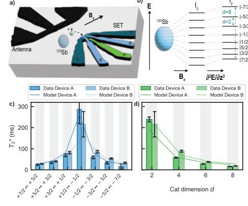
<figcaption class="paper-figure-caption"><b>Fig 1.</b> FIG. 1. Noise in the 123Sb nuclear qudit. a) Device schematic. A single 123Sb implanted in a silicon chip binds a hyperfine-coupled electron, tunnel-coupled to a readout Sin- gle Electron Transistor (SET), formed by a source (S)-drain (D) channel, two barrier (B) gates and a plunger (P) gate. An on-chip antenna provides an oscillating magnetic field to drive both Electron Spin Resonance (ESR) and Nuclear Magnetic Resonance (NMR). An externally applied magnetic field Bz defines the spin quantization axis. b) Energy diagram of the spin states of the 123Sb nucleus. The magnetic field Bz cou- pled to the linear Iz operator splits the 8 eigenstates equally. An electric field gradient ∂2E/∂α∂β...</figcaption>
</figure>
<figure class="paper-figure-card">
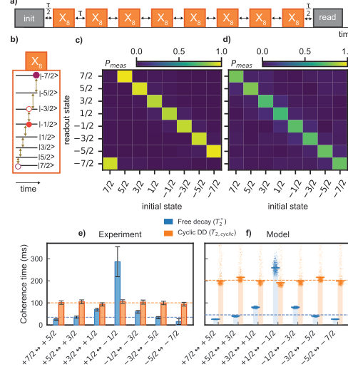
<figcaption class="paper-figure-caption"><b>Fig 2.</b> FIG. 2. Cyclic-DD sequence and performance on qubit superpositions. a) Cyclic-DD pulse sequence, consisting of 8 X8 operations cyclically permuting over all eigenstates. Each operation is separated by a free evolution time τ with initial and final segments of τ/2 to form a symmetric se- quence. b) One d = 8 shift operation is constructed (X8) by sequentially applying seven π pulses from bottom to top. As a result, |7/2⟩population (purple) transfers all the way to |−7/2⟩whereas all other eigenstates move by ∆m = +1, i.e. |−3/2⟩→|−1/2⟩(orange). c) Measured transfer matrix of one X8 operation. d) Measured transfer matrix of 8 se- quential X8 operations. Applying 8 X8’s ideally reduces to the...</figcaption>
</figure>
<figure class="paper-figure-card">
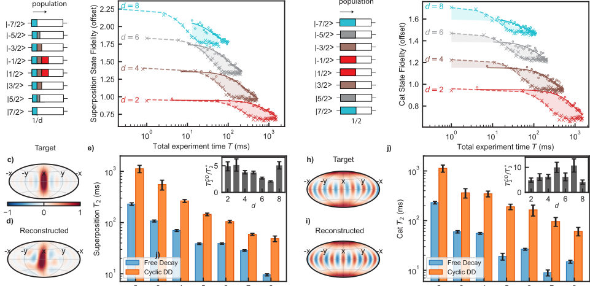
<figcaption class="paper-figure-caption"><b>Fig 3.</b> FIG. 3. Performance of cyclic DD on nonclassical states. a) Overlapping population distributions of uniform superposi- tions in symmetric, even d-dimensional Hilbert spaces. Populations are filled up to 1/d. Cyan, grey, brown and red correspond to d = 8, 6, 4, 2 respectively. b) Fidelity decay as a function of the total experiment time T of uniform superposition states for all even dimensions for free decay (x markers) and cyclic DD (o markers). The cyclic DD datapoints start at a later T due to the longer total duration of the Xd operations. c) Target and d) reconstructed normalized Wigner function. The color scale is the same for all Wigner functions in this article. (F = 96.4%) of the d...</figcaption>
</figure>
<figure class="paper-figure-card">
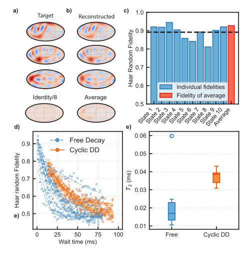
<figcaption class="paper-figure-caption"><b>Fig 4.</b> FIG. 4. Cyclic DD sequence on Haar random states. a) Target and reconstructed Wigner functions of three examples of Haar random states. b) The average over all Haar random states should result in the maximally mixed state ρ = I/d. The average reconstructed density matrix is maximally mixed with F = 92.7%. c) Fidelities of 10 created Haar random states (blue, Favg = 89.2%), and fidelity of the averaged state (red). d) Fidelity decay of 10 Haar random states for free evolution and cyclic DD. e) Box plot of the median T2 in both cases.</figcaption>
</figure>
<figure class="paper-figure-card">
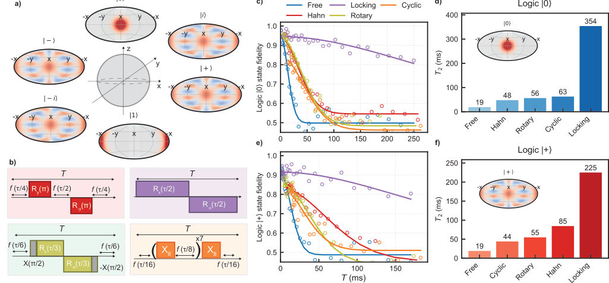
<figcaption class="paper-figure-caption"><b>Fig 5.</b> FIG. 5. Comparison of dynamical decoupling strategies on logical cat code states. a) Wigner functions of the logical code words of the spin-cat code, all displaying the Ix-axis as their primary symmetry axis. b) Schematic representation of the implemented dynamical decoupling protocols: Hahn echo (red), spin locking (purple), rotary echo (green), cyclic DD (orange). c) Measured coherence decay of the logical states |0⟩L and d) |+⟩L under each DD strategy. e-f) Comparison of all strategies. Pulsed sequences (Hahn echo, cyclic) both yield improvements for |0⟩L and |+⟩L. Continuous sequences (rotary, spin locking) provide significant protection, with spin locking achieving the longest...</figcaption>
</figure>
</div>

<p><strong>Summary.</strong> This paper addresses the challenge of maintaining coherence in high-dimensional qudits by showing that the inherent noise bias in the system allows for a dramatic reduction in the overhead of Dynamical Decoupling sequences. By applying tailored DD techniques, the researchers achieved significant, order-of-magnitude improvements in the coherence time of nonclassical quantum states encoded in a silicon-based spin qudit.</p>
<p><strong>Why it may be interesting.</strong> This work is highly relevant as it tackles the scaling bottleneck in qudit quantum memory, providing concrete, hardware-specific methods (tailoring DD to noise bias) to improve coherence times in solid-state quantum platforms.</p>
<details>
<summary>Detailed structure</summary>
<p><strong>Main problem.</strong> The primary challenge addressed is protecting the coherence of nonclassical qudit states, as standard Dynamical Decoupling (DD) overhead scales poorly (quadratically) with the qudit dimension ($d$).</p>
<p><strong>Main result.</strong> The study demonstrates that leveraging the noise bias in the qudit system allows for a significant reduction in DD overhead, achieving linear scaling. This results in substantial coherence time enhancements, extending the logical superposition time by factors up to 10.</p>
<p><strong>Method.</strong> The authors employ Dynamical Decoupling (DD) sequences, specifically tailored cyclic DD and spin locking, to suppress noise effects on highly nonclassical states.</p>
<p><strong>Model / system.</strong> The system modeled is a $d=8$ qudit, realized using the nuclear spin of an antimony donor ($  ext{}^{123} ext{Sb}$) in silicon. The noise is characterized by a bias, limiting dominant interactions to diagonal operators.</p>
<p><strong>Key observables.</strong> Coherence time ($T_2$), logical coherence time for the spin-cat code, and process fidelity.</p>
<p><strong>Important parameters / regimes.</strong> Qudit dimension $d=8$; coherence improvement factors (5 to 10); specific time scales like $225 	ext{ ms}$ for logical coherence.</p>
<p><strong>Assumptions / limitations.</strong> The analysis assumes the noise is dominated by dephasing (diagonal operators), and the DD simulation assumes instantaneous control pulses.</p>
<p><strong>Figures summary.</strong> Figures compare coherence times ($T_2^*$) for different subspaces and cat states under free decay versus various DD sequences (Hahn Echo, Cyclic DD, Spin Locking). One figure compares process fidelity for different DD strategies under static noise.</p>
<p><strong>Paper structure.</strong> The paper progresses by first establishing the problem of high DD overhead in qudits, then introducing the noise bias advantage to simplify the DD sequence to linear scaling. It benchmarks this on specific nonclassical states and culminates in showing the superior performance of tailored sequences like spin locking for logical qubits.</p>
</details>
<details>
<summary>Abstract</summary>
<p>Encoding quantum information in $d$-dimensional systems (qudits) with $d>2$ offers appealing new directions for resource-efficient quantum computing. However, protecting the coherence of nonclassical qudit resource states remains an open challenge. Dynamical decoupling (DD) is a well-established technique for extending coherence, but its application to qudits is hindered by the quadratic scaling of the decoupling sequence overhead with the dimension $d$. As a result, demonstrations of qudit DD have so far been limited to low-dimensional qudits. Here, we show that noise-biased qudits enable a nontrivial reduction of this overhead, for example, from quadratic to linear. We perform qudit DD on a model $d=8$ qudit, the nuclear spin of an antimony donor in silicon. We benchmark DD performance on highly nonclassical states such as uniform superpositions, cat states, and Haar random states and measure coherence improvements up to a factor $5$ to $10$. For a spin-cat error correction code, continuous DD extends the coherence time of the logical superposition $|+\rangle_L$ to $225$~ms, compared to $19$~ms under free evolution and $85$~ms with a Hahn echo. This improvement shows that DD sequences tailored to a system's noise bias can significantly enhance the lifetime of encoded logical qubits.</p>
</details>
<p><sub><a href="#top">↑ back to top</a></sub></p>

<p><a id="paper-2610.20553"></a></p>
<h3 id="metallic-electron-crystals-in-rhombohedral-graphene-as-a-bridge-to-twisted-wsemath397math"><a href="http://arxiv.org/abs/2610.20553v1">Metallic electron crystals in rhombohedral graphene as a bridge to twisted WSe$_2$</a></h3>
<p><strong>Authors:</strong> Wentai Deng, Chenyuan Li, Naoto Nakatsuji, Fang Xie, Lei Chen, Qimiao Si, Jennifer Cano<br>
<strong>Type:</strong> theory · <strong>Category:</strong> strongly correlated electrons · <strong>PDF:</strong> <a href="https://arxiv.org/pdf/2610.20553v1">https://arxiv.org/pdf/2610.20553v1</a><br>
<strong>Analysis basis:</strong> full PDF text, analyzed in chunks
<strong>Topic relevance:</strong> <code>analog quantum simulation</code> <strong>3/5</strong> · <code>Keldysh / 2PI / non-Gaussian methods</code> <strong>1/5</strong></p>
<div class="figure-strip-hint">↔ Scroll figures horizontally</div>
<div class="paper-figures-scroll">
<figure class="paper-figure-card">
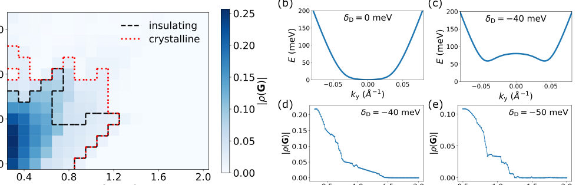
<figcaption class="paper-figure-caption"><b>Fig 1.</b> FIG. 1. (a) Phase diagram for Wigner crystallization as a function of the electron density n and interlayer potential δD. |ρ(G)| is the order parameter quantifying the broken continuous translation symmetry. The red and black dashed lines respectively mark the onset of the crystalline phase (|ρ(G)| &gt; 0.02) and the metal-to-insulator transition. (b-c) The first conduction band of the noninteracting R5G band structure. The dispersion becomes “W”-shaped for sufficiently large displacement field potential δD, leading to multiple Fermi surfaces. (d-e) Line cuts of |ρ(G)| vs. n for two fixed interlayer potentials.</figcaption>
</figure>
<figure class="paper-figure-card">
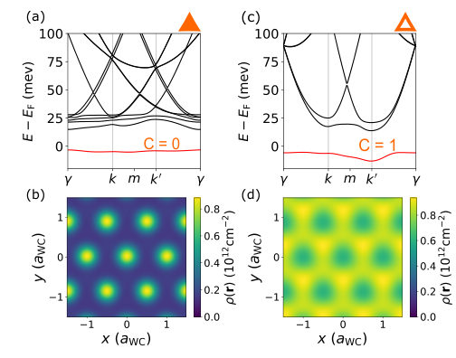
<figcaption class="paper-figure-caption"><b>Fig 2.</b> FIG. 2. Insulating WC states. (a-b) The band structure and real space density distribution of the HF solution at δD = −25 meV and n = 0.3 × 1012 cm−2. (c-d) Same plots but at δD = −30 meV and n = 0.8×1012 cm−2. Red curves indicate the top valence band with Chern number C indicated.</figcaption>
</figure>
<figure class="paper-figure-card">
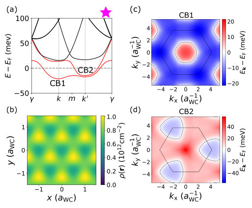
<figcaption class="paper-figure-caption"><b>Fig 3.</b> FIG. 3. Metallic WC state. (a) HF band structure at δD = −40 meV and n = 0.8×1012 cm−2. The two conduction bands near the Fermi level, denoted CB1 and CB2, are highlighted by red curves. (b) Real space density distribution. (c-d) Dispersion of the first and second conduction bands (CB1 and CB2). The black solid line shows the Brillouin zone of this crystalline state, and the dashed curves show the Fermi surfaces, consisting of a hole and an electron pocket around the γ and k′ points, respectively.</figcaption>
</figure>
<figure class="paper-figure-card">
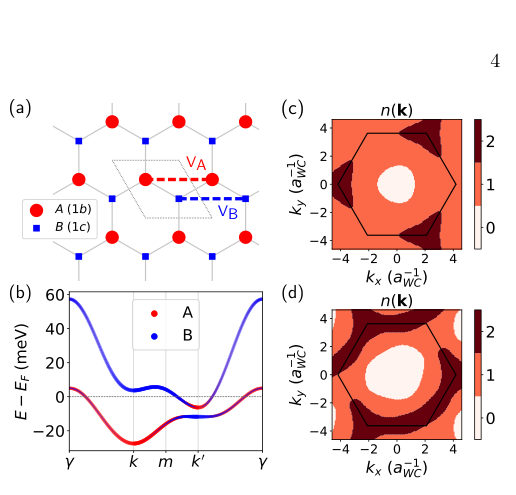
<figcaption class="paper-figure-caption"><b>Fig 4.</b> FIG. 5. Effective t-V model. (a) Schematic of the hon- eycomb lattice with A orbitals at the 1b Wyckoff position (red dots) and B orbitals at the 1c Wyckoff position (blue squares). Marker sizes reflects the local real space density for each orbital. Dotted lines mark the unit cell of the underlying triangular Bravais lattice, while dashed lines denote density- density interaction bonds. (b) Non-interacting band structure of the effective model, parametrized to reproduce the princi- pal features of the two relevant HF bands at δD = −40 meV and n = 0.8 × 1012cm−2. Red and blue indicate the A- and B-orbital weights. (c, d) Momentum distribution n(k) for VA = VB = 3 meV and VA = VB = 30 meV,...</figcaption>
</figure>
<figure class="paper-figure-card">
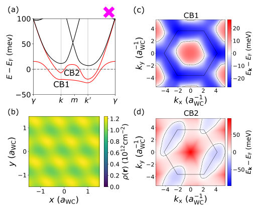
<figcaption class="paper-figure-caption"><b>Fig 5.</b> FIG. 4. Metallic WC state with C3z-symmetry breaking. The model parameters are δD = −45 meV and n = 1.1×1012 cm−2. (a) HF band structure. (b) Real space density distribution. (c-d) Dispersion of the first and second conduction bands (CB1 and CB2). The dashed curves show the Fermi surfaces, consisting of a hole pocket around γ and an electron pocket that encloses a k-m-k′ segment.</figcaption>
</figure>
</div>

<p><strong>Summary.</strong> This work unifies the understanding of superconductivity in rhombohedral graphene and twisted WSe2 by proposing that both systems are governed by a metallic Wigner crystal phase. Through advanced HF calculations, the authors derive an effective t-V model that captures the low-energy electronic structure, suggesting a common underlying physics for superconductivity in these correlated 2D materials.</p>
<p><strong>Why it may be interesting.</strong> The concept of emergent, correlated electronic phases (like metallic Wigner crystals) providing a universal low-energy description across different physical platforms (graphene vs. TMDs) is highly relevant to understanding unconventional superconductivity in strongly correlated systems.</p>
<details>
<summary>Detailed structure</summary>
<p><strong>Main problem.</strong> To propose a unified physical picture connecting the superconductivity observed in rhombohedral multilayer graphene (RMG) and twisted bilayer WSe2.</p>
<p><strong>Main result.</strong> The superconductivity in RMG is linked to a metallic Wigner crystal phase, which shares a surprisingly similar low-energy description (a t-V model) with that of tWSe2.</p>
<p><strong>Method.</strong> The study employs self-consistent Hartree-Fock (HF) calculations on continuum and lattice models, followed by constructing and analyzing an effective t-V Hamiltonian.</p>
<p><strong>Model / system.</strong> The primary system is rhombohedral multilayer graphene (RMG), modeled with an interlayer potential. The low-energy physics is captured by an effective t-V model on a triangular lattice, mirroring the physics of twisted bilayer transition metal dichalcogenides.</p>
<p><strong>Key observables.</strong> Crystalline order parameter $|
ho(\mathbf{G})|$, Chern number ($C$), band structure, and the effective Hamiltonian parameters.</p>
<p><strong>Important parameters / regimes.</strong> Electron concentration ($n$), interlayer potential ($\delta D$), and the moiré length scale inherent to the twisted bilayer systems.</p>
<p><strong>Assumptions / limitations.</strong> The analysis relies on the Hartree-Fock approximation and assumes the existence of a metallic Wigner crystal phase that dictates the low-energy physics.</p>
<p><strong>Figures summary.</strong> Figures illustrate the phase diagram showing transitions between insulating and metallic Wigner crystal states, the resulting band structures, and the symmetry breaking associated with the metallic phase.</p>
<p><strong>Paper structure.</strong> The paper progresses by first establishing the correlated metallic state in RMG via HF calculations, identifying the symmetry breaking, and then deriving a minimal effective t-V model whose low-energy physics is compared directly to that of tWSe2.</p>
</details>
<details>
<summary>Abstract</summary>
<p>Superconducting phases have recently been discovered both in twisted bilayers of transition metal dichalcogenide WSe$_2$ (tWSe$_2$) and in rhombohedral multilayer graphene (RMG). While both have generated extensive interest, they appear to be driven by qualitatively different physics. Here, we propose a unified picture in which the superconductivity in RMG arises from a strongly correlated metallic state with a spatial length scale that is compatible with the moiré length scale of tWSe$_2$. Central to this mechanism is a Wigner crystal phase in RMG that is metallic, driven by a "W"-shaped dispersion in the flat part of the underlying graphene band structure. We demonstrate this effect through calculations of Wigner crystal states in pentalayer RMG, focusing on dilute electrons in the quarter-metal regime relevant to experiment. In a region of the phase diagram we find the Wigner crystal breaks three-fold rotation symmetry, which guides our construction of a $t$-$V$ model on a triangular lattice as an effective description of the low-energy electronic physics. This construction suggests a surprisingly similar low-energy description of RMG and tWSe$_2$. Broader implications for superconductivity in dilute carrier systems are also discussed.</p>
</details>
<p><sub><a href="#top">↑ back to top</a></sub></p>

<p><a id="paper-2610.19286"></a></p>
<h3 id="mutual-information-of-measurement-in-conformal-field-theories"><a href="http://arxiv.org/abs/2610.19286v1">Mutual Information of Measurement in Conformal Field Theories</a></h3>
<p><strong>Authors:</strong> Israel Klich, Ravisankar Rajagopal, Diana Vaman<br>
<strong>Type:</strong> theory · <strong>Category:</strong> statistical mechanics · <strong>PDF:</strong> <a href="https://arxiv.org/pdf/2610.19286v1">https://arxiv.org/pdf/2610.19286v1</a><br>
<strong>Analysis basis:</strong> full PDF text, analyzed in chunks
<strong>Topic relevance:</strong> <code>quantum measurements</code> <strong>3/5</strong> · <code>Keldysh / 2PI / non-Gaussian methods</code> <strong>1/5</strong></p>
<div class="figure-strip-hint">↔ Scroll figures horizontally</div>
<div class="paper-figures-scroll">
<figure class="paper-figure-card">
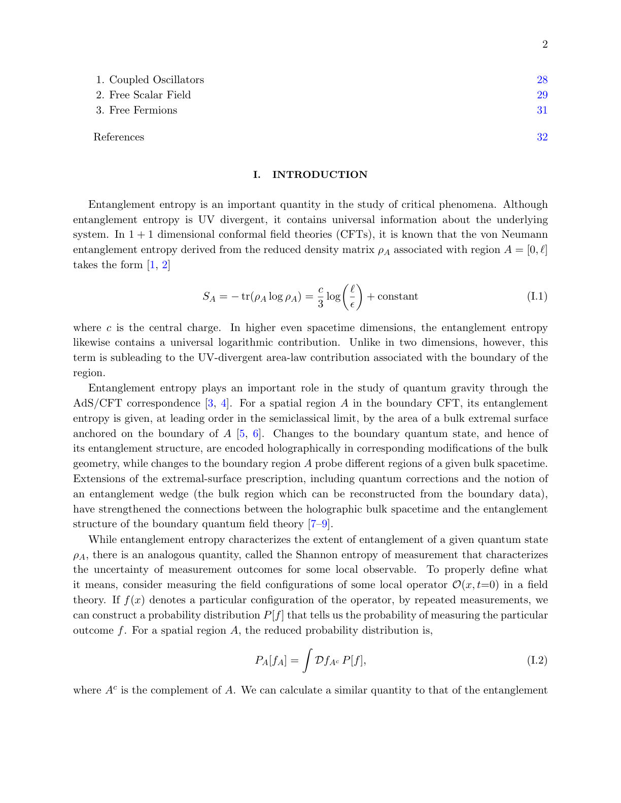
<figcaption class="paper-figure-caption"><b>Fig 1.</b> Low-resolution page preview, page 2</figcaption>
</figure>
<figure class="paper-figure-card">
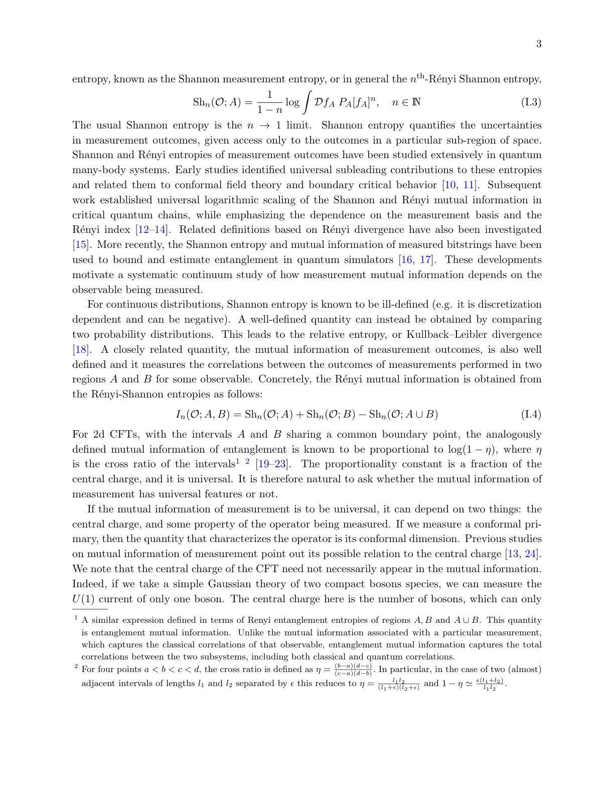
<figcaption class="paper-figure-caption"><b>Fig 2.</b> Low-resolution page preview, page 3</figcaption>
</figure>
<figure class="paper-figure-card">
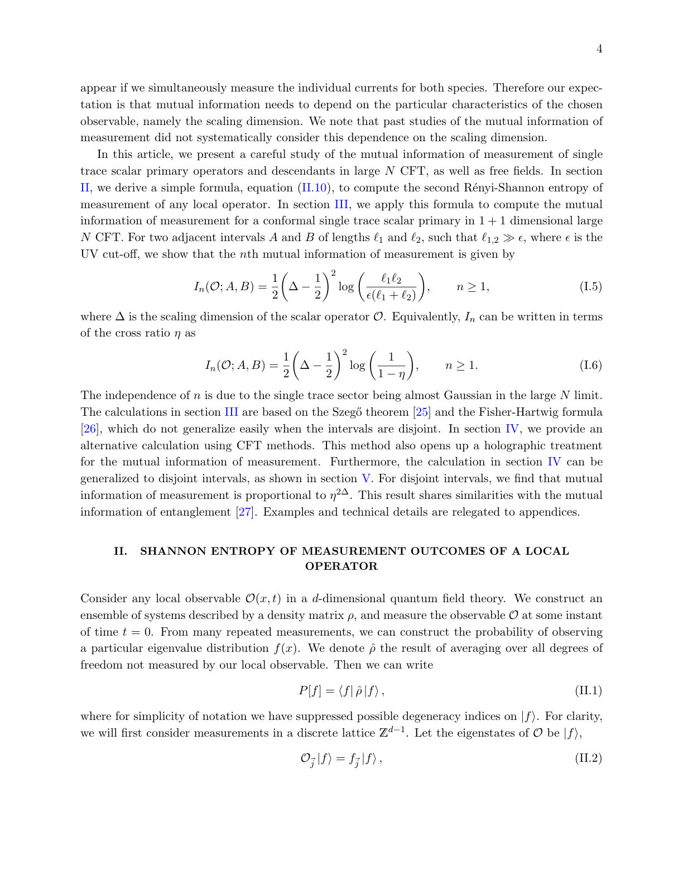
<figcaption class="paper-figure-caption"><b>Fig 3.</b> Low-resolution page preview, page 4</figcaption>
</figure>
<figure class="paper-figure-card">
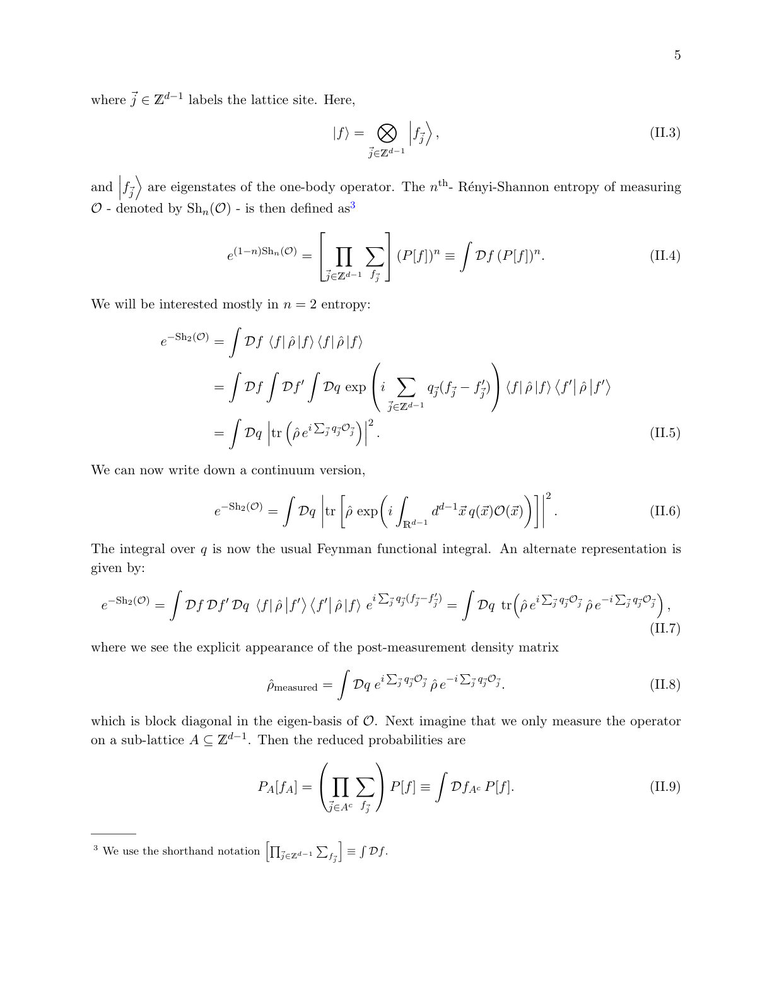
<figcaption class="paper-figure-caption"><b>Fig 4.</b> Low-resolution page preview, page 5</figcaption>
</figure>
<figure class="paper-figure-card">
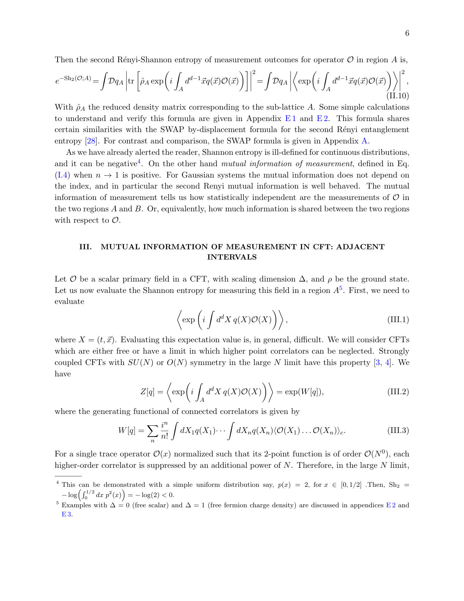
<figcaption class="paper-figure-caption"><b>Fig 5.</b> Low-resolution page preview, page 6</figcaption>
</figure>
</div>

<p><strong>Summary.</strong> This theoretical paper calculates the mutual information associated with measuring a local operator in Conformal Field Theories. The authors derive explicit formulas showing the result depends only on the operator's scaling dimension and the geometry of the measurement regions. This work deepens the understanding of quantum correlations in critical systems and addresses subtleties regarding information processing inequalities.</p>
<p><strong>Why it may be interesting.</strong> The connection between measurement-induced information measures and fundamental CFT properties ($\Delta$) provides a novel diagnostic tool for quantum critical systems, linking quantum information theory directly to critical phenomena in condensed matter physics.</p>
<details>
<summary>Detailed structure</summary>
<p><strong>Main problem.</strong> The paper investigates the mutual information of measurement for a local operator within Conformal Field Theories (CFTs). It specifically compares this quantity to entanglement entropy and explores its dependence on the geometry of the measurement regions.</p>
<p><strong>Main result.</strong> For adjacent measurement intervals, the mutual information exhibits a surprising quadratic dependence on the scaling dimension, $\propto (\Delta - 1/2)^2$. The authors also resolve an apparent violation of the information processing inequality.</p>
<p><strong>Method.</strong> The calculations utilize the Rényi-Shannon entropy formalism, employing techniques like the Szegő theorem and analyzing correlation functions in the large N limit of CFTs.</p>
<p><strong>Model / system.</strong> The theoretical framework is Conformal Field Theories (CFTs), applied to scalar primaries and descendants in the large N limit. Specific examples include free scalar fields and free fermions.</p>
<p><strong>Key observables.</strong> Mutual Information of Measurement ($   ext{In}(O; A, B)$), Rényi-Shannon Entropy of Measurement ($ ext{Sh}_n(O; A)$), and Entanglement Entropy ($S_A$).</p>
<p><strong>Important parameters / regimes.</strong> Scaling dimension ($\Delta$), the cross ratio ($\eta$), and the ratio of interval lengths ($\ell_1, \ell_2$).</p>
<p><strong>Assumptions / limitations.</strong> The analysis relies on the large N limit, the use of specific mathematical theorems (Szegő), and the assumption that certain correlators are small enough to simplify the calculation.</p>
<p><strong>Figures summary.</strong> Not specified, but the notes indicate calculations for adjacent and disjoint intervals, and comparisons between different measurement procedures.</p>
<p><strong>Paper structure.</strong> The paper systematically defines the measurement entropy, calculates the mutual information for adjacent intervals using advanced CFT techniques, analyzes the dependence on $\Delta$, and discusses the implications for information processing inequalities, concluding with holographic interpretations.</p>
</details>
<details>
<summary>Abstract</summary>
<p>The mutual information of measurement of a local operator between two spatial regions characterizes the reduction in the uncertainty of measurement outcomes in one region given the outcome in the other. We study the Rényi-Shannon mutual information of measurement in conformal field theories (CFTs). Explicit calculations for scalar primaries and descendants in large $N$ CFTs are performed in the two extreme limits of the intervals being adjacent or largely separated. The results depend on only the cross ratio and the scaling dimension $Δ$ of the operator being measured, with striking similarities to the mutual information of entanglement. We find a surprising quadratic dependence as $(Δ-1/2)^2$ for adjacent intervals. This dependence superficially seems to violate the information processing inequality, which we discuss and resolve. We also offer a holographic interpretation of the mutual information of measurement.</p>
</details>
<p><sub><a href="#top">↑ back to top</a></sub></p>

<p><a id="paper-2610.20128"></a></p>
<h3 id="disorder-induced-griffiths-like-phase-and-charge-localization-in-sr2feruo6"><a href="http://arxiv.org/abs/2610.20128v1">Disorder-Induced Griffiths like Phase and Charge Localization in Sr2FeRuO6</a></h3>
<p><strong>Authors:</strong> Koustav Pal, Shuvendu Ghosh, I. Das<br>
<strong>Type:</strong> both · <strong>Category:</strong> strongly correlated electrons · <strong>PDF:</strong> <a href="https://arxiv.org/pdf/2610.20128v1">https://arxiv.org/pdf/2610.20128v1</a><br>
<strong>Analysis basis:</strong> full PDF text, analyzed in chunks
<strong>Topic relevance:</strong> <code>analog quantum simulation</code> <strong>3/5</strong></p>
<div class="figure-strip-hint">↔ Scroll figures horizontally</div>
<div class="paper-figures-scroll">
<figure class="paper-figure-card">
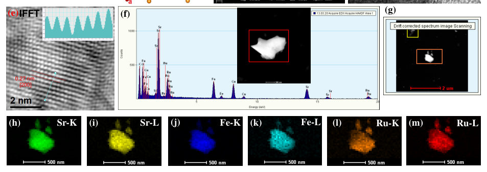
<figcaption class="paper-figure-caption"><b>Fig 1.</b> FIG. 1. (a) Full-profile Rietveld refinement of the XRD pattern for the powdered polycrystalline SFRO compound recorded at 300 K; (b) Monoclinic crystal structure of the double perovskite SFRO, where FeO6 and RuO6 octahedra are illustrated with Fe (green) and Ru (blue) atoms at the centers surrounded by oxygen atoms (orange). The central atom in the structure is Sr (sky blue); (c) SEM image of SFRO; (d) HRTEM image of SFRO; (e) Inverse fast Fourier transform (IFFT) image obtained from the red boxed region in (d); (f) EDX spectrum of SFRO, with the inset showing the corresponding STEM-HAADF image of the analyzed particle (red box); (g) STEM-HAADF image of the particle on which elemental...</figcaption>
</figure>
<figure class="paper-figure-card">
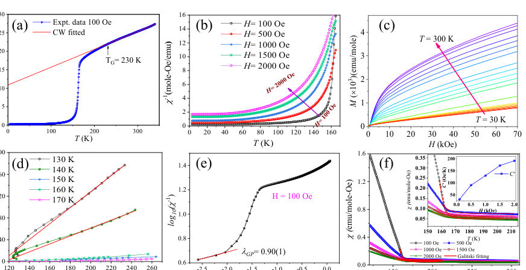
<figcaption class="paper-figure-caption"><b>Fig 2.</b> FIG. 2. (a) Temperature-dependent inverse susceptibility (1/χ) curve for the SFRO compound measured under an applied magnetic field of 100 Oe. The solid red line represents the Curie–Weiss (CW) fit. (b) 1/χ under external magnetic fields of 100 Oe, 500 Oe, 1500 Oe, and 2000 Oe. The solid lines serve as guides to the eye, highlighting deviations from CW behavior. (c) Isothermal magnetization curves recorded between 30 K and 300 K for the SFRO compound. (d) Arrott plots (H/M vs M 2) above the transition temperature. Solid lines denote linear extrapolations from the high-field region. (e) Double-logarithmic plot of inverse susceptibility data against the reduced temperature, with solid red...</figcaption>
</figure>
<figure class="paper-figure-card">
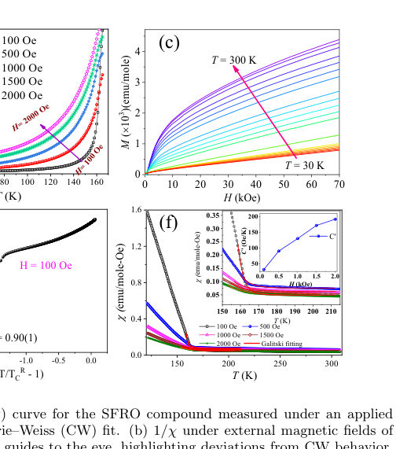
<figcaption class="paper-figure-caption"><b>Fig 3.</b> Figure 2(e) presents the double-logarithmic plot of log10 χ−1 versus log10(T/TCR −1), from which the Grif- fiths exponent λGP was extracted. The fitted value λGP ≈0.90(1) indicates a very strong Griffiths-like devi- ation from ideal Curie–Weiss behavior 38,54,55. However, since λ values close to 1 lie near the upper bound of ap- plicability of the modified Curie–Weiss description, such values should be interpreted with caution. Therefore, the large λGP obtained here is taken as indicative of a strong Griffiths-like response within the fitting framework, but not as an isolated proof by itself.</figcaption>
</figure>
<figure class="paper-figure-card">
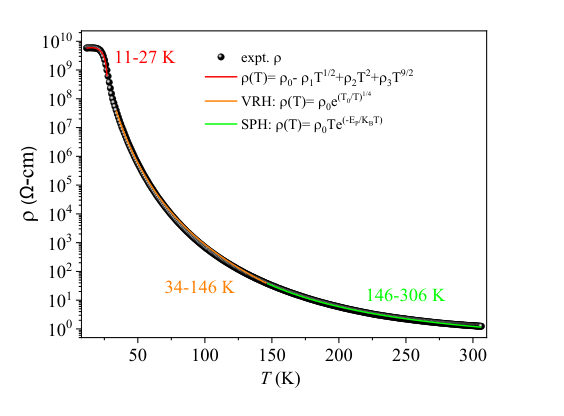
<figcaption class="paper-figure-caption"><b>Fig 4.</b> FIG. 3. Temperature dependence of electrical resistivity for the SFRO compound, along with the corresponding model fits in different temperature regimes. The green, orange, and red lines represent the best fits obtained using the SPH, VRH, and low-temperature polynomial (LT) models, respectively. The corresponding fitting equations are also indicated.</figcaption>
</figure>
<figure class="paper-figure-card">

<figcaption class="paper-figure-caption"><b>Fig 5.</b> FIG. 4. (a) Small-polaron hopping (SPH) model: variation of ln(ρ/T) with 1/T under zero magnetic field, where the red line represents the best fit to the SPH model; (b) Variable- range hopping (VRH) model: variation of ln ρ with T −1/4 for the SFRO compound in zero magnetic field, with the red line showing the best fit to the VRH model.</figcaption>
</figure>
</div>

<p><strong>Summary.</strong> This paper investigates $  ext{Sr}_2   ext{FeRuO}_6$, a complex oxide, to understand how structural disorder influences its magnetic and electronic properties. The authors report evidence for a Griffiths phase in its magnetism and demonstrate that charge transport undergoes a temperature-dependent crossover from polaron hopping to variable-range hopping. This highlights the role of disorder in stabilizing complex, inhomogeneous electronic states in transition metal oxides.</p>
<p><strong>Why it may be interesting.</strong> The interplay between quenched disorder, magnetic frustration (Griffiths phase), and charge localization in $3d-4d$ oxides is a canonical problem in strongly correlated electron physics, relevant for designing functional spintronic materials.</p>
<details>
<summary>Detailed structure</summary>
<p><strong>Main problem.</strong> The study aims to understand the complex interplay between structural disorder, frustrated magnetism, and localized charge transport in transition-metal oxide double perovskites.</p>
<p><strong>Main result.</strong> The material exhibits a robust Griffiths phase due to disorder-driven spin inhomogeneity, coupled with charge transport that transitions through Small-Polaron Hopping and Variable-Range Hopping mechanisms.</p>
<p><strong>Method.</strong> The research combines structural characterization (XRD, TEM) with magnetic measurements (SQUID for M(T)) and electrical transport measurements (four-probe resistivity vs. T).</p>
<p><strong>Model / system.</strong> The physical system is the double perovskite $  ext{Sr}_2   ext{FeRuO}_6$, a $3d-4d$ hybrid material known for its structural disorder (B-site antisite disorder) and competing magnetic interactions.</p>
<p><strong>Key observables.</strong> Magnetization $M(T)$, resistivity $
ho(T)$, and the exponents characterizing the Griffiths phase ($\lambda_{   ext{GP}}$) and hopping regimes ($E_P, T_0$).</p>
<p><strong>Important parameters / regimes.</strong> The system is characterized by the monoclinic structure, the presence of disorder, and temperature regimes defining distinct transport mechanisms (SPH, VRH).</p>
<p><strong>Assumptions / limitations.</strong> The analysis assumes that the observed transport behavior can be modeled sequentially by SPH at high T and VRH at intermediate T, and that the magnetic behavior is governed by cluster formation in a disordered matrix.</p>
<p><strong>Figures summary.</strong> Figures show XRD patterns confirming the monoclinic structure, $M(T)$ curves demonstrating Griffiths phase behavior, and $\ln(
ho/T)$ vs $1/T$ and $\ln 
ho$ vs $T^{-1/4}$ plots confirming the crossover between SPH and VRH regimes.</p>
<p><strong>Paper structure.</strong> The paper follows a standard materials science structure: structural characterization $
ightarrow$ magnetic property analysis (identifying the Griffiths phase) $
ightarrow$ detailed analysis of temperature-dependent charge transport mechanisms (SPH $
ightarrow$ VRH $
ightarrow$ low-T anomaly).</p>
</details>
<details>
<summary>Abstract</summary>
<p>A comprehensive understanding of complex transition-metal oxides is key to designing next-generation spintronic materials with tailored magnetic and transport functionalities. We investigate the interplay among structural disorder, frustrated magnetism, and localized charge transport in the 3d-4d hybrid double perovskite Sr2FeRuO6. The compound adopts a monoclinic structure with significant B-site antisite disorder that drives its unconventional behavior. Magnetic measurements uncover a robust Griffiths phase extending well above the ordering temperature, evidencing stable short-range ferromagnetic clusters within a disordered matrix. Electrical transport remains strongly localized, transitioning from small-polaron hopping at high temperatures to variable-range hopping at intermediate temperatures. These results position Sr2FeRuO6 as a representative 3d-4d hybrid system in which quenched disorder stabilizes spin inhomogeneity, while polaronic and hopping transport are also observed.</p>
</details>
<p><sub><a href="#top">↑ back to top</a></sub></p>

<p><a id="paper-2610.19077"></a></p>
<h3 id="federated-unlearning-of-quantum-data-via-classical-shadows"><a href="http://arxiv.org/abs/2610.19077v1">Federated Unlearning of Quantum Data via Classical Shadows</a></h3>
<p><strong>Authors:</strong> Zihao Ding, Jun Huang, Cong-cong Xing<br>
<strong>Type:</strong> both · <strong>Category:</strong> quantum information and computing · <strong>PDF:</strong> <a href="https://arxiv.org/pdf/2610.19077v1">https://arxiv.org/pdf/2610.19077v1</a><br>
<strong>Analysis basis:</strong> full PDF text, analyzed in chunks
<strong>Topic relevance:</strong> <code>quantum measurements</code> <strong>3/5</strong></p>
<div class="figure-strip-hint">↔ Scroll figures horizontally</div>
<div class="paper-figures-scroll">
<figure class="paper-figure-card">

<figcaption class="paper-figure-caption"><b>Fig 1.</b> Fig. 1. System model of federated unlearning on quantum data.</figcaption>
</figure>
<figure class="paper-figure-card">

<figcaption class="paper-figure-caption"><b>Fig 2.</b> Fig. 2. Backward light cone of the measured observable in a layered QNN.</figcaption>
</figure>
<figure class="paper-figure-card">

<figcaption class="paper-figure-caption"><b>Fig 3.</b> Fig. 3. Parameter-shift records fix the parameters, shadows do not.</figcaption>
</figure>
<figure class="paper-figure-card">

<figcaption class="paper-figure-caption"><b>Fig 4.</b> Fig. 4. The architecture of SHADE at the nodes and the server.</figcaption>
</figure>
<figure class="paper-figure-card">

<figcaption class="paper-figure-caption"><b>Fig 5.</b> Fig. 5. Testbed of edge boards with device noise, and the spin-chain data.</figcaption>
</figure>
</div>

<p><strong>Summary.</strong> This paper introduces Shadow-based Data Erasure (SHADE), a novel technique for performing federated unlearning on quantum neural networks. Since quantum states cannot be replayed, SHADE records classical 'shadows' of the data during training. These shadows allow the network to estimate and correct for the influence of forgotten data using a federated Newton correction, achieving high accuracy efficiently.</p>
<p><strong>Why it may be interesting.</strong> It addresses the critical intersection of quantum machine learning and data privacy, providing a concrete, resource-efficient method for model updating in distributed quantum settings.</p>
<details>
<summary>Detailed structure</summary>
<p><strong>Main problem.</strong> Developing a method for federated unlearning of quantum data when the quantum states cannot be replayed due to measurement consumption.</p>
<p><strong>Main result.</strong> The proposed SHADE method matches the forget accuracy of retraining within 0.5 points in simulation, achieving this without replaying states and in under 0.2 seconds.</p>
<p><strong>Method.</strong> SHADE records classical 'shadows' (random single-qubit Pauli measurements) of training states and estimates the necessary gradient and curvature contributions using these shadows to perform a federated Newton correction.</p>
<p><strong>Model / system.</strong> The system involves training a Quantum Neural Network (QNN) across multiple nodes holding quantum data, such as states from quantum sensors. The core mechanism relies on estimating expectation values of observables.</p>
<p><strong>Key observables.</strong> Forget accuracy (FA), Utility (RA/TA), Parameter/Output distance to retrain, and computational time.</p>
<p><strong>Important parameters / regimes.</strong> Shadow size, backward light cone size, number of nodes (e.g., 50), and required unlearning error ($\epsilon$).</p>
<p><strong>Assumptions / limitations.</strong> The primary assumption is that the gradient and curvature can be estimated solely from classical shadows, avoiding the need to re-prepare or re-measure the original quantum states.</p>
<p><strong>Figures summary.</strong> Figures illustrate the system model, the backward light cone scaling, and compare SHADE's performance against other unlearning techniques across various deletion scenarios and scalability tests.</p>
<p><strong>Paper structure.</strong> The paper introduces the problem of quantum data unlearning, details the SHADE mechanism (Shadow Recording, Estimation, Newton Correction), provides theoretical guarantees on shadow size, and validates the approach through extensive simulations and comparisons with existing methods.</p>
</details>
<details>
<summary>Abstract</summary>
<p>Quantum federated learning trains a quantum neural network (QNN) across nodes that hold quantum data, such as the states of quantum sensors. To forget data, unlearning methods for quantum models replay them, and federated unlearning from stored updates removes whole nodes only. Quantum data cannot be replayed, since a state is consumed when measured and cannot be cloned. We propose Shadow-based Data Erasure (SHADE), in which each node records a classical shadow of every training state, a few randomized single-qubit measurements taken at training time. The gradient and curvature of a QNN on a state are expectations of observables, so SHADE estimates them for the forget data from the shadows at any later parameters and removes their effect by a federated Newton correction. Only classical estimates cross the network. We prove that the shadow size needed for a target unlearning error grows exponentially in the size of the backward light cone of the measured observable and not in the number of qubits. In simulation with 50 nodes and on edge boards, SHADE matches the forget accuracy of retraining within 0.5 points, without replay and in under 0.2 s.</p>
</details>
<p><sub><a href="#top">↑ back to top</a></sub></p>

<p><a id="paper-2610.19933"></a></p>
<h3 id="photon-demultiplexing-using-spatial-routing"><a href="http://arxiv.org/abs/2610.19933v1">Photon Demultiplexing Using Spatial Routing</a></h3>
<p><strong>Authors:</strong> Hashir Kuniyil, Asad Ali, Saif Al-Kuwari<br>
<strong>Type:</strong> theory · <strong>Category:</strong> quantum information and computing · <strong>PDF:</strong> <a href="https://arxiv.org/pdf/2610.19933v1">https://arxiv.org/pdf/2610.19933v1</a><br>
<strong>Analysis basis:</strong> full PDF text, analyzed in chunks
<strong>Topic relevance:</strong> <code>interference shaping light</code> <strong>3/5</strong></p>
<div class="figure-strip-hint">↔ Scroll figures horizontally</div>
<div class="paper-figures-scroll">
<figure class="paper-figure-card">

<figcaption class="paper-figure-caption"><b>Fig 1.</b> FIG. 1: Schematic of the azimuthal routing kernel of a noncollinear SPDC source. Side view: a Gaussian pump beam (waist w0, wavelength λp) impinges on a noncritically phase-matched (NCPM) in a noncollinear SPDC configuration. A collection lens of focal length f maps the emission cone onto the far-field plane, which is observed as annular field. Front view: the far-field SPDC annulus of momentum central radius q0 and radial thickness δq; signal and idler photons of a pair occupy antipodal points on the ring. The signal azimuth is ϕs; momentum conservation alone would place the idler at the exact antipode (× marker), but the finite pump waist displaces it by δ ∼N (0,σ2 δ I2) with σδ = 1/w0...</figcaption>
</figure>
<figure class="paper-figure-card">

<figcaption class="paper-figure-caption"><b>Fig 2.</b> FIG. 2: Per-channel routing consistency and the channel-capacity law. (a) Routing consistency ηroute versus the number of antipodal wedge-pair channels N. Solid curves are the closed form [Eq. (11)] for three representative rings,(θ0,w0) = (1◦,200µm), (3◦,200µm), (3◦,600µm), i.e. w0q0 = 47, 142, 427; open circles are pair-level Monte Carlo sampling the full joint biphoton amplitude (λd = 810nm, L = 3mm; 1.5×106 pairs per point) with no azimuthal idealization. Closed form and simulation agree to ∼10−3 at every point; the dotted line marks η = 0.99. (b) Channel capacity Nmax as a function of the single design parameter w0q0 at routing targets η ≥0.99, 0.95, 0.90 [Eq. (12)]. The capacity is...</figcaption>
</figure>
<figure class="paper-figure-card">

<figcaption class="paper-figure-caption"><b>Fig 3.</b> FIG. 3: Wedge segmentation of the SPDC annulus into N = 4 antipodal channel pairs. The far-field ring is divided into M = 2N = 8 equal wedges of angular width ∆Φ = π/N; each antipodal pair (e.g. A/A′, B/B′) forms one self-contained two-user entanglement channel. Light-shaded strips of width g at every wedge boundary are the guard bands of Sec. IV A: photons landing in these dead zones are discarded at the coincidence level, suppressing routing errors exponentially [Eq. (16)] at a linear budget cost of ≈2g/∆Φ. The prescription uniform wedges + guards sized by Eq. (17) is the optimal segmentation of a degenerate SPDC ring (Sec. IV B).</figcaption>
</figure>
<figure class="paper-figure-card">

<figcaption class="paper-figure-caption"><b>Fig 4.</b> FIG. 4: (a) Residual routing error 1−η versus the guard width g inserted at each wedge boundary. The solid curve is the exact result, Eq. (15); the dashed curve is the leading form of Eq. (16), which overestimates the residual at large g because the two terms of the bracket in Eq. (15) nearly cancel. Circles are pair-level Monte Carlo with statistical error bars (logarithmic ordinate). (b) Residual error versus the retained photon budget A (g). The star marks a 5% guard, at which the Monte Carlo residual is (1.70±0.14)×10−6 (108 pairs) while 88% of the coincidences are retained.</figcaption>
</figure>
</div>

<p><strong>Summary.</strong> This work establishes a theoretical framework for achieving high-capacity quantum communication by spatially multiplexing entangled photon pairs from SPDC sources. By analyzing the azimuthal correlation, the authors derive a capacity law that dictates the maximum number of usable channels. This provides a crucial design blueprint for scaling quantum networks using spatial-division multiplexing.</p>
<p><strong>Why it may be interesting.</strong> It provides a rigorous, quantitative design theorem for scaling quantum communication channels using spatial degrees of freedom, analogous to established standards in classical optical networking.</p>
<details>
<summary>Detailed structure</summary>
<p><strong>Main problem.</strong> The paper addresses the fundamental limits for spatial-division multiplexing (SDM) of entangled photons generated via spontaneous parametric down-conversion (SPDC) for multi-user quantum communication.</p>
<p><strong>Main result.</strong> They developed a design strategy showing that 12 user-pair channels can be realized with high fidelity, and the aggregate key rate scales favorably with the number of users due to the relative scaling of signal versus accidental coincidences.</p>
<p><strong>Method.</strong> The authors derived a practical framework by decomposing the pair correlation into radial and azimuthal channels, leading to a capacity law governed by the azimuthal entanglement resource.</p>
<p><strong>Model / system.</strong> The system is based on the far-field noncollinear field from bulk-crystal SPDC, where the entangled photon pair correlation is analyzed using polar coordinates and transverse-momentum conservation.</p>
<p><strong>Key observables.</strong> Routing Fidelity ($\eta$), Photon Flux Reduction, Azimuthal Schmidt Number ($K_{az}$), and the aggregate secret key rate ($R_{key}^{agg}$).</p>
<p><strong>Important parameters / regimes.</strong> The capacity is governed by the dimensionless parameter $w_0q_0$, which is independent of the crystal length.</p>
<p><strong>Assumptions / limitations.</strong> The framework is specific to bulk-crystal SPDC and focuses on the position basis, distinct from OAM multiplexing.</p>
<p><strong>Figures summary.</strong> Figure 4 illustrates the residual routing error versus guard width, demonstrating the error suppression mechanism, and shows the relationship between error and retained photon budget.</p>
<p><strong>Paper structure.</strong> The paper progresses from establishing the physical basis (SPDC noncollinear field) to deriving the capacity law based on azimuthal correlation, and finally analyzing the practical implications for key rate scaling and error suppression.</p>
</details>
<details>
<summary>Abstract</summary>
<p>Spatial sectioning of the far-field noncollinear field from spontaneous parametric down-conversion (SPDC) is a promising approach for multiparty quantum communication. Although demonstrations with six pairs of users have been reported, the fundamental limits remain unknown. These include the maximum number of channels, the required degree of channel optimization, and the dependence on input parameters. In this paper, we provide a practical framework that answers these questions by connecting input parameters and invoking a design theorem. For a representative configuration, we realize 12 user-pair channels with routing consistency exceeding $0.9999$ at a $12\%$ reduction in photon flux. We further show that sectioning improves the accidental-coincidence budget linearly with the number of channels $N$, allowing the aggregate key rate to scale with the user count. These results provide a design strategy for spatial-division multiplexing of entangled photons analogous to the channel-spacing standards used in wavelength-division networks.</p>
</details>
<p><sub><a href="#top">↑ back to top</a></sub></p>

<p><a id="paper-2610.20166"></a></p>
<h3 id="quantized-six-vertex-realizations-of-frustration-graphs"><a href="http://arxiv.org/abs/2610.20166v1">Quantized six-vertex realizations of frustration graphs</a></h3>
<p><strong>Authors:</strong> Atsuo Kuniba, Souta Oikawa<br>
<strong>Type:</strong> theory · <strong>Category:</strong> statistical mechanics · <strong>PDF:</strong> <a href="https://arxiv.org/pdf/2610.20166v1">https://arxiv.org/pdf/2610.20166v1</a><br>
<strong>Analysis basis:</strong> full PDF text, analyzed in chunks
<strong>Topic relevance:</strong> <code>analog quantum simulation</code> <strong>3/5</strong></p>
<div class="figure-strip-hint">↔ Scroll figures horizontally</div>
<div class="paper-figures-scroll">
<figure class="paper-figure-card">

<figcaption class="paper-figure-caption"><b>Fig 1.</b> Figure 3. The path powers P 1 7 and P 2 7 , together with the induced subgraph P 2 7 [J] for J = {1, 3, 4, 5, 7}, with edges oriented from smaller to larger vertices. The vertices {1, 4, 7} form an independent set in both P 2 7 and P 2 7 [J]. All three graphs are indifference graphs.</figcaption>
</figure>
<figure class="paper-figure-card">

<figcaption class="paper-figure-caption"><b>Fig 2.</b> Figure 4. A triangle with a pendant vertex, in the ordering v1 &lt; v2 &lt; v3 &lt; v4.</figcaption>
</figure>
<figure class="paper-figure-card">

<figcaption class="paper-figure-caption"><b>Fig 3.</b> Figure 6. The induced embedding of the oriented graph G into P 8 14, with every edge directed from the smaller vertex to the larger one. Only the relevant vertices and the edges among them are shown.</figcaption>
</figure>
<figure class="paper-figure-card">

<figcaption class="paper-figure-caption"><b>Fig 4.</b> Figure 9. The nonzero local weights under the five-vertex specialization (25). Upper and lower rows apply to the rows a = 1, . . . , p and a = 0 of Gp,L in Figure 8, respectively. In the former, the vertices are rotated 90 degrees anti- clockwise, reflecting the orientation in Figure 8. In either row, the nonzero local configurations thus form a quantized five-vertex model.</figcaption>
</figure>
</div>

<p><strong>Summary.</strong> This paper establishes a deep connection between graph theory and quantum integrable models by showing that the quantized six-vertex (Q6V) model can realize Hamiltonians whose spectra are free-parafermionic. It achieves this by demonstrating that the Q6V transfer matrix naturally encodes the structure of any arbitrary indifference graph. This provides a powerful, concrete realization of a key criterion in the study of exactly solvable quantum systems.</p>
<p><strong>Why it may be interesting.</strong> This work connects abstract graph theory (indifference graphs) directly to a concrete, integrable quantum statistical model (Q6V), providing a powerful tool for understanding exactly solvable quantum many-body systems.</p>
<details>
<summary>Detailed structure</summary>
<p><strong>Main problem.</strong> To provide a concrete realization of a graph-theoretic criterion stating that a Hamiltonian exhibits a free-parafermion spectrum if its frustration graph is an indifference graph.</p>
<p><strong>Main result.</strong> The paper shows that any finite indifference graph can be realized as the frustration graph of the quantized six-vertex (Q6V) model at odd roots of unity.</p>
<p><strong>Method.</strong> The authors map the graph-theoretic structure (indifference graphs) onto the algebraic structure of the Q6V model's transfer matrix, demonstrating an equivalence between the independent-set operator and the transfer matrix.</p>
<p><strong>Model / system.</strong> The primary model is the Quantized Six-Vertex (Q6V) model, analyzed at odd roots of unity. The physics is governed by a Hamiltonian whose spectrum is related to independent sets of a graph, which is formalized via the Q6V layer transfer matrix.</p>
<p><strong>Key observables.</strong> Free-parafermion spectrum, the independent-set operator $T_G(y)$, and the layer transfer matrix $T_G(y)$ of the Q6V model.</p>
<p><strong>Important parameters / regimes.</strong> Odd roots of unity ($\epsilon$), the graph structure (indifference graphs), and parameters defining the Q6V wiring diagram ($p, L$).</p>
<p><strong>Assumptions / limitations.</strong> The equivalence between the indifference ordering and the umbrella property is assumed from prior work, and the Q6V approach is restricted to odd roots of unity.</p>
<p><strong>Figures summary.</strong> Figures illustrate the flow from an arbitrary indifference graph to the Q6V realization, show examples of indifference orderings and path powers, and detail the admissible wiring diagram for the Q6V model.</p>
<p><strong>Paper structure.</strong> The paper establishes the graph-theoretic criterion, then details the Q6V model setup, and finally proves the equivalence by showing that the Q6V transfer matrix naturally generates the independent-set operator for any indifference graph.</p>
</details>
<details>
<summary>Abstract</summary>
<p>A recent graph-theoretic criterion for a Hamiltonian to exhibit a free-parafermion spectrum is that its frustration graph be an indifference graph. We show that an arbitrary finite indifference graph can be realized as a frustration graph of the quantized six-vertex model at odd roots of unity, by a suitable choice of the defining wiring diagram and parameters. This provides a concrete realization of the criterion through the quantum Frobenius property of the quantized six-vertex model, recently established from its three-dimensional integrable structure.</p>
</details>
<p><sub><a href="#top">↑ back to top</a></sub></p>

<p><a id="paper-2610.19922"></a></p>
<h3 id="quantum-folding-in-chebyshev-based-quantum-subspace-diagonalization"><a href="http://arxiv.org/abs/2610.19922v1">Quantum Folding in Chebyshev-Based Quantum Subspace Diagonalization</a></h3>
<p><strong>Authors:</strong> Seung Park, Dongni Chen, Stefano Chesi, Kyunghyun Baek, Mahn-Soo Choi<br>
<strong>Type:</strong> theory · <strong>Category:</strong> quantum information and computing · <strong>PDF:</strong> <a href="https://arxiv.org/pdf/2610.19922v1">https://arxiv.org/pdf/2610.19922v1</a><br>
<strong>Analysis basis:</strong> full PDF text, analyzed in chunks
<strong>Topic relevance:</strong> <code>analog quantum simulation</code> <strong>3/5</strong></p>
<div class="figure-strip-hint">↔ Scroll figures horizontally</div>
<div class="paper-figures-scroll">
<figure class="paper-figure-card">

<figcaption class="paper-figure-caption"><b>Fig 1.</b> FIG. 1. Ground-state overlap of the two reference states versus system size. The N´eel overlap decays exponentially, while the folded-state overlap stays O(1).</figcaption>
</figure>
<figure class="paper-figure-card">

<figcaption class="paper-figure-caption"><b>Fig 2.</b> Figure 2 shows the energy error | eE0 −E0| versus the Krylov dimension D without noise. Both states exhibit the exponential convergence (17), but with markedly dif- ferent prefactors and, for S = 1, different effective gaps:</figcaption>
</figure>
<figure class="paper-figure-card">

<figcaption class="paper-figure-caption"><b>Fig 3.</b> FIG. 2. Noiseless convergence of the ground-energy error with the Krylov dimension D for the folded and N´eel reference states. Left: S = 1/2, 2L = 24. Right: S = 1, 2L = 12.</figcaption>
</figure>
<figure class="paper-figure-card">

<figcaption class="paper-figure-caption"><b>Fig 4.</b> Figure 3 (top row) shows the noisy convergence at σ = 10−5. The N´eel error saturates by D ≈40 at a floor of ∼0.09 (S = 1 2) and ∼0.05 (S = 1)—i.e. it never gets below a few percent of J—whereas the folded error keeps decreasing through the largest Krylov dimension simulated, reaching ∼2 × 10−4 (S = 1 2) and ∼10−5</figcaption>
</figure>
<figure class="paper-figure-card">

<figcaption class="paper-figure-caption"><b>Fig 5.</b> FIG. 3. Noise robustness. Top row: energy error versus D at fixed moment noise σ = 10−5 (medians over 40 realizations; bands: interquartile range). Bottom row: converged error (median over D ∈[45, 60] and realizations) versus σ. Left: S = 1/2, 2L = 24. Right: S = 1, 2L = 12.</figcaption>
</figure>
</div>

<p><strong>Summary.</strong> This paper introduces 'quantum folding' to enhance Quantum Subspace Diagonalization (QSD), a method for finding ground-state energies. It overcomes the limitation where standard QSD fails due to exponentially small overlaps with the true ground state. By intelligently seeding the diagonalization with subsystem ground states, the authors achieve a scalable framework with provable error bounds, making it highly relevant for simulating complex quantum many-body systems.</p>
<p><strong>Why it may be interesting.</strong> This work provides a concrete, theoretically bounded improvement to variational quantum eigensolvers, directly addressing the scalability bottleneck associated with exponentially small overlaps in simulating strongly correlated quantum materials.</p>
<details>
<summary>Detailed structure</summary>
<p><strong>Main problem.</strong> The primary challenge addressed is the exponential decay of the overlap between the reference state and the true ground state when using standard Quantum Subspace Diagonalization (QSD) methods for finding ground-state energies.</p>
<p><strong>Main result.</strong> The introduction of 'quantum folding' allows for a scalable QSD framework that maintains polynomial cost for ground-state preparation by seeding the process with a product of subsystem ground states.</p>
<p><strong>Method.</strong> The authors propose quantum folding, which modifies the QSD initialization by using a product state of subsystem ground states, and they derive nonasymptotic error bounds by transplanting effective-Hamiltonian analysis to the Chebyshev-Krylov basis.</p>
<p><strong>Model / system.</strong> The theory is tested on local Hamiltonians, specifically using antiferromagnetic Heisenberg chains (spin-1/2 and spin-1) to demonstrate the method's efficacy.</p>
<p><strong>Key observables.</strong> Ground-state energy ($E_0$), error bounds (linear in measurement noise), and the fold fidelity ($F(L)$).</p>
<p><strong>Important parameters / regimes.</strong> System size ($L$), Krylov dimension ($D$), and the spectral gap ($\Delta$).</p>
<p><strong>Assumptions / limitations.</strong> The method assumes the Hamiltonian is local and that the interface terms govern the deviation from the true ground state, allowing for the use of subsystem ground states as a reference.</p>
<p><strong>Figures summary.</strong> The notes mention specific results for the fold fidelity $F(L)$ for different chains: a slow power law for the gapless spin-1/2 chain, saturation at $\approx 0.22$ for the gapped spin-1 chain, and convergence to $1/4$ for the AKLT chain.</p>
<p><strong>Paper structure.</strong> The paper develops the concept in four logical steps: establishing the error bound, introducing the folded reference state, detailing the state preparation procedure, and finally calculating the fold fidelity.</p>
</details>
<details>
<summary>Abstract</summary>
<p>Quantum subspace diagonalization (QSD) with a Krylov space spanned by Chebyshev polynomials of the Hamiltonian is a natural ground-state method for fault-tolerant quantum computers, but every guarantee it offers---convergence rate, noise floor, and the cost of turning its classical output back into a physical state---is controlled by the overlap of the reference state with the true ground state, which decays exponentially with system size for any product state and non-trivial Hamiltonian. We propose quantum folding: for a system governed by a local Hamiltonian, seed the QSD with the product of the ground states of its subsystems, which differs from the target only through the interface terms. We prove a nonasymptotic error bound for the Chebyshev QSD that is linear in the measurement noise, by transplanting Kirby's effective-Hamiltonian analysis to the Chebyshev--Krylov basis, and identify the block-encoding rescaling of the Hamiltonian as a parameter of the guarantee. Exact simulations of antiferromagnetic Heisenberg chains show that the folded reference state reduces the Krylov dimension for a given accuracy severalfold and lowers the error under noise by two to five orders of magnitude relative to the Néel state. We show how the Ritz vector is prepared as a physical state and that the ground-state generation probability obeys a tight ceiling set by the overlap, so that recursive folding prepares ground states at polynomial cost. Taken together, these results allow for a scalable QSD framework that avoids the exponentially small ground-state overlaps associated with conventional product-state initialization. Finally we compute the fold fidelity itself: a slow power law for the gapless spin-1/2 chain, a size-independent constant for the gapped spin-$1$ chain, and an exact closed form converging to 1/4 for the AKLT chain.</p>
</details>
<p><sub><a href="#top">↑ back to top</a></sub></p>

<p><a id="paper-2610.19873"></a></p>
<h3 id="acoustic-scattering-from-quantum-dynamics"><a href="http://arxiv.org/abs/2610.19873v1">Acoustic scattering from quantum dynamics</a></h3>
<p><strong>Authors:</strong> Farhang Loran, Ali Mostafazadeh<br>
<strong>Type:</strong> theory · <strong>Category:</strong> other · <strong>PDF:</strong> <a href="https://arxiv.org/pdf/2610.19873v1">https://arxiv.org/pdf/2610.19873v1</a><br>
<strong>Analysis basis:</strong> full PDF text, analyzed in chunks
<strong>Topic relevance:</strong> <code>Keldysh / 2PI / non-Gaussian methods</code> <strong>2/5</strong> · <code>methods for driven-dissipative</code> <strong>2/5</strong> · <code>analog quantum simulation</code> <strong>1/5</strong> · <code>correlated / nonlocal dissipation</code> <strong>1/5</strong> · <code>driven-dissipative phase transition</code> <strong>1/5</strong> · <code>non-equilibrium universality</code> <strong>1/5</strong> · <code>quantum measurements</code> <strong>1/5</strong></p>
<div class="figure-strip-hint">↔ Scroll figures horizontally</div>
<div class="paper-figures-scroll">
<figure class="paper-figure-card">

<figcaption class="paper-figure-caption"><b>Fig 1.</b> Figure 1: Schematic view of the scattering setup. n0 and n are respectively the unit vectors along the incident wave vector and the position vector for a generic detector. The yellow elliptic region represents a detector screen position at z “ `8. This corresponds to n having a positive z component. The left and right panels represent situations in which the z component of n0 takes positive and negative values, respectively.</figcaption>
</figure>
<figure class="paper-figure-card">

<figcaption class="paper-figure-caption"><b>Fig 2.</b> Figure 2: Schematic view of an acoustic slab of thickness ℓcontaining delta-function point scat- terers lying on the x-y plane (marked in green). The red dotes on this plane stand for the point scatterers. The blue region corresponding to ´a ď z ď ℓ´ a represents the slab.</figcaption>
</figure>
<figure class="paper-figure-card">

<figcaption class="paper-figure-caption"><b>Fig 3.</b> Figure 3: Schematic view of a homogeneous acoustic slab containing a pair of delta-function point scatterers (shown as red balls) on one of its faces.</figcaption>
</figure>
<figure class="paper-figure-card">

<figcaption class="paper-figure-caption"><b>Fig 4.</b> Figure 4: The unit sphere S2 and the circle identifying the unit vectors n with identical x com- ponents nx ‰ ˘1. The blue arrow represents a generic example of such a unit vector.</figcaption>
</figure>
<figure class="paper-figure-card">

<figcaption class="paper-figure-caption"><b>Fig 5.</b> Figure 5: Graphical representation of the unit vectors n along which the contributions of the point scatterers to the scattering amplitude cancel for z2 “ z1, |z1| ! 1, d “ 2λ, and n0 “ p0, 0, 1q “: ez. Because n ‰ ˘ez, we have fpez, nq « 0. The pink sphere is the unit sphere S2 that is centered at the origin. The circles plotted on S2 represent the unit vectors n fulfilling fpez, nq « 0. For d “ 2λ, the integer m appearing in (181) take four values, namely ´2, ´1, 0, and 1. These correspond to the purple (nx “ ´ 3</figcaption>
</figure>
</div>

<p><strong>Summary.</strong> This theoretical work connects the physics of acoustic wave scattering in fluids to the formalism of non-Hermitian quantum mechanics. By formulating the problem using a fundamental transfer matrix, the authors derive new proofs for the reciprocity theorem and provide detailed analytic results for low-frequency scattering. This methodology is valuable for understanding wave interactions in complex, inhomogeneous media.</p>
<p><strong>Why it may be interesting.</strong> The mathematical framework—mapping classical wave scattering to non-Hermitian quantum dynamics—is highly relevant to open quantum systems and wave propagation in structured media.</p>
<details>
<summary>Detailed structure</summary>
<p><strong>Main problem.</strong> The paper analyzes acoustic scattering in a compressible fluid by linking the scattering process to the dynamics governed by non-Hermitian Hamiltonian operators.</p>
<p><strong>Main result.</strong> The authors provide a new proof of the reciprocity theorem in acoustic scattering and derive explicit analytic formulas for low-frequency scattering calculations.</p>
<p><strong>Method.</strong> The analysis uses a dynamical formulation based on the fundamental transfer matrix ($\mathbf{X}_M$) derived from the governing wave equation (Bergmann's equation).</p>
<p><strong>Model / system.</strong> The system is a compressible fluid undergoing acoustic scattering, modeled by Bergmann's equation. The scattering dynamics are mapped onto an effective non-unitary quantum system described by a Hamiltonian.</p>
<p><strong>Key observables.</strong> Scattering amplitude ($f$), differential cross section ($|\mathbf{f}|^2$), and transfer matrix elements ($  ilde{U}_{\vec{p}, z, z_0}^q$).</p>
<p><strong>Important parameters / regimes.</strong> Low-frequency regime ($k\ell \ll 1$), incident/scattered wave vectors ($\mathbf{k}_0, \mathbf{q}$), and the confinement length ($\ell$) of inhomogeneities.</p>
<p><strong>Assumptions / limitations.</strong> The derivation relies on the fundamental transfer matrix approach and assumes validity of asymptotic conditions for the scattering amplitude calculation.</p>
<p><strong>Figures summary.</strong> Figures show the schematic setup for scattering and plots of the differential cross section versus scattering angle ($\vartheta$), comparing cases with and without an embedded homogeneous slab.</p>
<p><strong>Paper structure.</strong> The paper develops the theory by relating the wave equation to quantum dynamics, deriving the scattering amplitude from the transfer matrix, proving reciprocity, and applying the method to specific geometries like point scatterers and homogeneous slabs.</p>
</details>
<details>
<summary>Abstract</summary>
<p>Scattering of sound waves propagating in a compressible fluid is linked to the quantum dynamics generated by a class of non-Hermitian Hamiltonian operators. The scattering amplitude is expressed in terms of the corresponding evolution operator. This is used to provide a new proof of the reciprocity theorem in acoustic scattering, conduct analytic low-frequency acoustic scattering calculations, and study the scattering of sound waves by a finite planar array of delta-function point scatters embedded in an infinite acoustic slab. A detailed discussion of acoustic scattering properties of a homogeneous acoustic slab including a pair of delta-function point scatters on one of its faces is provided.</p>
</details>
<p><sub><a href="#top">↑ back to top</a></sub></p>

<p><a id="paper-2610.19602"></a></p>
<h3 id="seismology-of-glasses"><a href="http://arxiv.org/abs/2610.19602v1">Seismology of Glasses</a></h3>
<p><strong>Authors:</strong> Zhiyu Cao, Peter G. Wolynes<br>
<strong>Type:</strong> theory · <strong>Category:</strong> disordered systems and neural networks · <strong>PDF:</strong> <a href="https://arxiv.org/pdf/2610.19602v1">https://arxiv.org/pdf/2610.19602v1</a><br>
<strong>Analysis basis:</strong> full PDF text, analyzed in chunks
<strong>Topic relevance:</strong> <code>correlated / nonlocal dissipation</code> <strong>2/5</strong> · <code>Frenkel-Kontorova</code> <strong>1/5</strong> · <code>Keldysh / 2PI / non-Gaussian methods</code> <strong>1/5</strong> · <code>analog quantum simulation</code> <strong>1/5</strong> · <code>driven-dissipative phase transition</code> <strong>1/5</strong> · <code>methods for driven-dissipative</code> <strong>1/5</strong> · <code>non-equilibrium universality</code> <strong>1/5</strong> · <code>scars &amp; prethermalization</code> <strong>1/5</strong></p>
<div class="figure-strip-hint">↔ Scroll figures horizontally</div>
<div class="paper-figures-scroll">
<figure class="paper-figure-card">

<figcaption class="paper-figure-caption"><b>Fig 1.</b> FIG. 1. Schematic of the viscoelastic response to an activated rearrangement of radius Rc. Arrows and alternating lobes indicate the Eshelby-type displacement field within the front at ℓ(t). The right-hand sequence illustrates front growth.</figcaption>
</figure>
<figure class="paper-figure-card">

<figcaption class="paper-figure-caption"><b>Fig 2.</b> FIG. 2. Scale-dependent relaxation and displacement statistics. (a) Calculated structural self-correlators Fs(q, t) for four representative wave vectors. The inset shows βapp(q), with reference values 1.68 and 0.88 and the experimental wave vector q0 indicated. (b) Evolution of the dimensionless self– Van Hove function d3 LGs(r, t) at fixed glassy conditions. The dashed curve is the local Gaussian determined from the cen- tral height and curvature at t/τα = 0.01 and held fixed at all later times. Vertical lines mark r = dL and r = 2π/q0 = 10dL.</figcaption>
</figure>
</div>

<p><strong>Summary.</strong> This theoretical work models the relaxation in structural glasses by treating local structural rearrangements as 'microseismic' sources generating far-field mechanical waves. By combining this far-field description with local event theories, the authors derive a unified picture predicting a crossover in relaxation behavior depending on the probing length scale. This work is significant for understanding how collective, long-range interactions modify local dynamics in disordered materials.</p>
<p><strong>Why it may be interesting.</strong> The concept of long-range, collective mechanical responses mediating local dynamics is highly relevant to understanding energy dissipation and relaxation in complex, disordered quantum systems, providing a classical analogy for many-body relaxation processes.</p>
<details>
<summary>Detailed structure</summary>
<p><strong>Main problem.</strong> To develop a unified theory describing the structural relaxation dynamics in glasses by accounting for both localized, discrete rearrangements and the cumulative, long-ranged mechanical fields generated by these events.</p>
<p><strong>Main result.</strong> The theory predicts a crossover in the relaxation behavior of the dynamical structure factor: compressed exponential decay at small wave vectors (dominated by far-field effects) and stretched exponential decay at large wave vectors (dominated by local jumps).</p>
<p><strong>Method.</strong> The authors combine Random First-Order Transition (RFOT) theory for local events with a viscoelastic description of the far-field displacements, deriving a renewal equation for the cumulative structural factor.</p>
<p><strong>Model / system.</strong> The system is structural glasses undergoing aging and relaxation, modeled as a viscoelastic medium where local rearrangements act as internal 'microseismic' sources. The theory uses the self-intermediate scattering function, $F_s(q, t)$, as the primary diagnostic tool.</p>
<p><strong>Key observables.</strong> Dynamical structure factor ($F_s(q, t)$), relaxation exponents (compressed vs. stretched exponential), and the inferred displacement growth exponent ($\eta_G$).</p>
<p><strong>Important parameters / regimes.</strong> Wave vector ($q$), time ($t$), characteristic event radius ($R_c$), and the viscoelastic relaxation time ($\mu_{	ext{eff}}^{-1}$).</p>
<p><strong>Assumptions / limitations.</strong> The theory assumes that local events are statistically independent and that the viscoelastic medium governs the far-field propagation of disturbances.</p>
<p><strong>Figures summary.</strong> Figure 1 schematically illustrates the viscoelastic response to a single rearrangement, while Figure 2 shows scale-dependent relaxation in $F_s(q, t)$ and the evolution of the self-Van Hove function.</p>
<p><strong>Paper structure.</strong> The paper builds the theory by first modeling the single-event response, then deriving a renewal equation to account for the cumulative effect of many events, and finally analyzing the resulting crossover in the relaxation functional form based on the probing length scale $q^{-1}$.</p>
</details>
<details>
<summary>Abstract</summary>
<p>Aging and relaxation of glasses proceed through localized rearrangements that also generate long-ranged mechanical responses in their surroundings. We develop a theory that treats these rearrangements as internal microseismic sources, and thereby separates the direct effects emerging from an event from the effects from the far-field displacements it generates. These far-field disturbances propagate and relax through the viscoelastic medium through which they move, producing a stochastic background of weak but numerous perturbations at any given location. Combining the description of local events from the Random First Order Transition theory with this propagating background, we derive a unified equation for the dynamical structure factor of a relaxing glass. The theory identifies a finite wave-vector and time window in which the growing viscoelastic far-field disturbances can produce compressed exponential relaxation, which has been observed using X-ray photon correlation spectroscopy. At higher wave vectors that resolve local jumps, heterogeneity of the local event dynamics instead produces stretched exponential relaxation. The crossover between these behaviors depends on the event statistics and the scattering phase accumulated across the region reached through viscoelastic propagation from the numerous distant sources.</p>
</details>
<p><sub><a href="#top">↑ back to top</a></sub></p>

<p><a id="paper-2610.20481"></a></p>
<h3 id="physical-limits-to-stochastic-classifiers"><a href="http://arxiv.org/abs/2610.20481v1">Physical limits to stochastic classifiers</a></h3>
<p><strong>Authors:</strong> Timur Aslyamov, Massimiliano Esposito<br>
<strong>Type:</strong> theory · <strong>Category:</strong> statistical mechanics · <strong>PDF:</strong> <a href="https://arxiv.org/pdf/2610.20481v1">https://arxiv.org/pdf/2610.20481v1</a><br>
<strong>Analysis basis:</strong> full PDF text, analyzed in chunks
<strong>Topic relevance:</strong> <code>quantum measurements</code> <strong>2/5</strong> · <code>Keldysh / 2PI / non-Gaussian methods</code> <strong>1/5</strong> · <code>analog quantum simulation</code> <strong>1/5</strong> · <code>correlated / nonlocal dissipation</code> <strong>1/5</strong> · <code>driven-dissipative phase transition</code> <strong>1/5</strong> · <code>methods for driven-dissipative</code> <strong>1/5</strong> · <code>non-equilibrium universality</code> <strong>1/5</strong></p>
<div class="figure-strip-hint">↔ Scroll figures horizontally</div>
<div class="paper-figures-scroll">
<figure class="paper-figure-card">

<figcaption class="paper-figure-caption"><b>Fig 1.</b> FIG. 1. Tasks on the same three inputs 𝑥1 &lt; 𝑥2 &lt; 𝑥3. Panels (a)–(c) illustrate schematic mean outputs at different control settings: (a) positive only at 𝑥3; (b) positive only at 𝑥2; (c) positive at both outer inputs 𝑥1 and 𝑥3 and negative at 𝑥2. The shaded band is |𝑞−𝜂| &lt; 𝛾; all marked means meet the margin. Panel (d) lists all eight labelings and highlights these examples. The attainable number 𝑁tasks ≤23</figcaption>
</figure>
<figure class="paper-figure-card">

<figcaption class="paper-figure-caption"><b>Fig 2.</b> FIG. 2. Geometric packing of attainable tasks in control space. Each small ball is centered at a setting realizing a different task. The cen- ters are at least 2𝛾/𝐾max apart, so the open balls of radius 𝛾/𝐾max are disjoint. Comparing their total volume with the enclosing ball gives the task-count bound.</figcaption>
</figure>
<figure class="paper-figure-card">

<figcaption class="paper-figure-caption"><b>Fig 3.</b> FIG. 3. Programming the two-state switch, with 𝑥= ±1, uniform preparation, 𝜂= 1/2,𝛾= 0.10, 𝑏= 0.5, 𝑓= 1.5, and 𝑘𝑇= 0.25 unless varied. (a) The control changes the two channel barriers oppositely. (b) Centered mean outputs divided by𝛾for 𝑥= −1 (blue) and +1 (or- ange); the endpoints realize inversion and copying. (c,d) Normalized maximum attainable margin𝛾exact max /𝛾(black) and its thermodynamic, transient, and Fisher upper bounds versus driving and observation time. The transient curve uses 𝑏¯Γtr. Shading marks task exclusion by the thermodynamic bound in (c) and the transient bound in (d); the horizontal line marks the required margin.</figcaption>
</figure>
<figure class="paper-figure-card">

<figcaption class="paper-figure-caption"><b>Fig 4.</b> FIG. 4. Minimum driving (a) and observation time (b) needed for copying and inversion at margin 𝛾, with 𝑏= 0.5, uniform prepara- tion, and 𝑥= ±1. We fix 𝑘𝑇= 0.25 in (a) and 𝑓= 1.5 in (b). Black gives the exact minimum; other curves give lower bounds. Shaded margins cannot be reached.</figcaption>
</figure>
</div>

<p><strong>Summary.</strong> This work establishes fundamental physical limits on the computational capacity of stochastic devices by analyzing how many distinct classification tasks can be performed. It achieves this by combining geometric constraints with fluctuation-response inequalities derived from non-equilibrium statistical mechanics. The results show that the achievable task count is severely restricted by the interplay between output noise, entropy production, and the available control range.</p>
<p><strong>Why it may be interesting.</strong> It provides rigorous, thermodynamically grounded bounds on information processing capacity, linking concepts like entropy production and noise to computational limits, which is highly relevant for open quantum systems.</p>
<details>
<summary>Detailed structure</summary>
<p><strong>Main problem.</strong> The paper quantifies the fundamental physical limits on the number of distinct classification tasks a stochastic device can perform by varying its control parameters.</p>
<p><strong>Main result.</strong> The number of tasks is bounded by geometric packing arguments combined with fluctuation-response inequalities, showing that performance is limited by the product of output fluctuations and entropy production.</p>
<p><strong>Method.</strong> The authors combine geometric packing arguments with fluctuation-response inequalities and thermodynamic bounds derived from non-equilibrium fluctuation-response relations.</p>
<p><strong>Model / system.</strong> The system is modeled as a stochastic physical computer governed by a Markov jump process on a finite graph, whose dynamics are controlled by external parameters.</p>
<p><strong>Key observables.</strong> Mean output ($\mathfrak{q}$), variance ($\langle\langle Q 
angle
angle$), entropy production ($\Sigma$), and control parameters ($oldsymbol{	heta}$).</p>
<p><strong>Important parameters / regimes.</strong> Control range ($\Delta	heta$), output margin ($\gamma$), and the ratio of fluctuation/entropy production terms.</p>
<p><strong>Assumptions / limitations.</strong> The analysis relies on establishing bounds using fluctuation-response theory and assuming the system operates under specific kinetic control regimes.</p>
<p><strong>Figures summary.</strong> Figures illustrate the geometric packing of attainable tasks in control space and show how the required margin ($\gamma$) for tasks like copying or inversion depends on driving strength and observation time.</p>
<p><strong>Paper structure.</strong> The paper develops bounds by first analyzing the general geometric constraints, then deriving specific bounds for kinetic control observables using fluctuation-response theory, and finally applying these bounds to specific physical examples like the two-state switch.</p>
</details>
<details>
<summary>Abstract</summary>
<p>Stochastic physical computers use random transitions between states to process inputs. We quantify their ability to solve distinct tasks as the control parameters of a device vary. For Markov jump devices, we bound the number of classification tasks attainable at a prescribed output margin, with each task defined as a binary labeling of fixed inputs. Combining geometric packing with fluctuation-response inequalities, we bound this number in terms of the control range and dimension, rate sensitivities, output fluctuations, and entropy production. For state and net-current observables, when controls change kinetics without changing thermodynamic forces and energies, the number of tasks is shaped by entropy production and output fluctuations. If the product of their maximum values over the allowed control settings and inputs is too small, the device can perform at most one task. An exactly solvable two-state switch illustrates how sufficient driving and observation time enable barrier tuning to select copying or inversion.</p>
</details>
<p><sub><a href="#top">↑ back to top</a></sub></p>

<p><a id="paper-2610.20148"></a></p>
<h3 id="loss-tolerant-measurement-device-independent-qkd-over-untrusted-repeaters-via-high-dimensional-time-bin-multiplexing"><a href="http://arxiv.org/abs/2610.20148v1">Loss-Tolerant Measurement-Device-Independent QKD over Untrusted Repeaters via High-Dimensional Time-Bin Multiplexing</a></h3>
<p><strong>Authors:</strong> Yu-Chun Yin, Ching-Yi Lai, Alexei Ashikhmin<br>
<strong>Type:</strong> theory · <strong>Category:</strong> quantum information and computing · <strong>PDF:</strong> <a href="https://arxiv.org/pdf/2610.20148v1">https://arxiv.org/pdf/2610.20148v1</a><br>
<strong>Analysis basis:</strong> full PDF text, analyzed in chunks
<strong>Topic relevance:</strong> <code>QC/QI experiment</code> <strong>2/5</strong> · <code>quantum optics experiment</code> <strong>2/5</strong> · <code>interference shaping light</code> <strong>1/5</strong> · <code>quantum measurements</code> <strong>1/5</strong></p>
<div class="figure-strip-hint">↔ Scroll figures horizontally</div>
<div class="paper-figures-scroll">
<figure class="paper-figure-card">

<figcaption class="paper-figure-caption"><b>Fig 1.</b> Fig. 1: Three-stage operation of the n-MUX quantum repeater scheme. (a) Alice and Bob generate n-MUX photons and send them to the intermediate node, Charlie. (b) Successful optical measurements at Charlie herald the creation of entanglement across the elementary links (A–C and B–C). (c) Charlie subsequently performs entanglement swapping on his QMs, thereby distributing end-to-end entanglement between Alice and Bob for subsequent QKD operations.</figcaption>
</figure>
<figure class="paper-figure-card">

<figcaption class="paper-figure-caption"><b>Fig 2.</b> Fig. 3: Secret key rate ratio rn as a function of the multiplexing depth n at L = 300 km. The ratio falls below unity for n ≥28.</figcaption>
</figure>
<figure class="paper-figure-card">

<figcaption class="paper-figure-caption"><b>Fig 3.</b> Fig. 4: Secret key rates for the MA n-MUX QKD protocol compared with the conventional 0-MUX protocol, assuming a bandwidth of 2N/(n+1). Dotted lines show the performance of the conventional (0-MUX) protocol under the same band- width constraint as the n-MUX protocol.</figcaption>
</figure>
<figure class="paper-figure-card">

<figcaption class="paper-figure-caption"><b>Fig 4.</b> Figure 4 as functions of the transmission distance L for various multiplexing depths n. The results in Figure 4 show that using n-MUX photons yields an approximately linear increase in the secret key rate as n grows, while the 0-MUX protocol suffers from reduced performance due to the decreasing available bandwidth 2N/n. For the 0-MUX protocol, the curves corresponding to different n nearly coincide for transmission distances below 60 km. Furthermore, for a fixed multiplexing depth n, our protocol achieves substantially longer transmission distances at the same key rate. For instance, at a rate of 10−4 with n = 7, the n-MUX protocol supports 217.8 km, compared to less than 133 km for 0-MUX....</figcaption>
</figure>
<figure class="paper-figure-card">

<figcaption class="paper-figure-caption"><b>Fig 5.</b> Figure 5 compares the conventional 0-MUX and 27-MUX protocols. The red solid line represents the 27-MUX protocol, and the red dashed line represents the 0-MUX protocol, showing the higher key rate and longer transmission distance achievable with the n-MUX protocol.</figcaption>
</figure>
</div>

<p><strong>Summary.</strong> This work proposes a robust, loss-tolerant MDI-QKD protocol designed for quantum networks with untrusted repeaters. It achieves this by employing high-dimensional time-bin multiplexing to generate multiple entangled pairs per photon and incorporating a memory-insensitive architecture. The results demonstrate a significant enhancement in key rates and transmission distance compared to conventional single-photon methods.</p>
<p><strong>Why it may be interesting.</strong> It provides a concrete, high-dimensional extension to quantum repeater protocols, directly impacting the feasibility and scalability of quantum internet infrastructure by improving key rates and distance limits.</p>
<details>
<summary>Detailed structure</summary>
<p><strong>Main problem.</strong> The paper addresses the challenge of achieving long-distance, secure quantum key distribution (QKD) over quantum networks containing untrusted intermediate repeaters.</p>
<p><strong>Main result.</strong> The proposed time-bin multiplexing protocol significantly enhances key rates and extends the effective transmission distance by nearly doubling it when quantum repeaters are employed, maintaining security against untrusted nodes.</p>
<p><strong>Method.</strong> The authors combine high-dimensional time-bin multiplexing with an entanglement-based Measurement-Device-Independent QKD (MDI-QKD) framework, incorporating a memory-insensitive (MI) architecture for repeater operation.</p>
<p><strong>Model / system.</strong> The system utilizes single photons entangled with local qubits stored in Nitrogen-Vacancy (NV) centers. The protocol models the generation of multiple entanglement pairs (EPR pairs) per transmitted photon using time-bin multiplexing ($d$ bins).</p>
<p><strong>Key observables.</strong> Secret key rate and maximum secure key distribution distance.</p>
<p><strong>Important parameters / regimes.</strong> The multiplexing factor $d$ (number of time bins), the number of repeaters $R$, and the target key rate.</p>
<p><strong>Assumptions / limitations.</strong> The protocol assumes the ability to perform entanglement distillation and relies on the use of NV centers for quantum memory storage.</p>
<p><strong>Figures summary.</strong> Figure 1 illustrates the three-stage operation of the quantum repeater scheme. Figure 6 compares the performance of the MI $n$-MUX MDI-QKD protocol, showing the distance extension with repeaters.</p>
<p><strong>Paper structure.</strong> The paper develops the protocol by first detailing the multiplexing mechanism for entanglement sharing, then extending this to the full MDI-QKD framework, and finally analyzing its performance over a chain of untrusted quantum repeaters.</p>
</details>
<details>
<summary>Abstract</summary>
<p>We propose a loss-tolerant measurement-device-independent quantum key distribution (MDI-QKD) protocol using time-bin-multiplexed single photons entangled with local qubits stored in nitrogen-vacancy (NV) centers. In each round, Alice and Bob each send a single multiplexed photon to an untrusted intermediary, Charlie. Each photon first becomes entangled with Charlie's NV-center qubits; Charlie then performs entanglement swapping between his NV qubits to establish EPR pairs between Alice's and Bob's local qubits. With $d$ time bins per photon, $\log_2 d + 1$ EPR pairs can be generated per transmitted photon, substantially increasing the probability of EPR-pair creation under limited channel bandwidth. To further mitigate the effects of prolonged memory storage, the protocol employs a memory-insensitive (MI) architecture, where multiple banks of qubits and multiplexed photon routing reduce the effective memory lifetime requirements. This approach enhances loss tolerance, enabling higher secret key rates and secure key distribution over longer distances compared to conventional single-photon protocols. Using the Lo-Chau EPR-QKD framework and Shor-Preskill reduction, we prove that the protocol is secure without trusting intermediate nodes, making it suitable for quantum networks with untrusted repeaters.</p>
</details>
<p><sub><a href="#top">↑ back to top</a></sub></p>

<p><a id="paper-2610.19702"></a></p>
<h3 id="coherent-state-integrals-beyond-the-domain-of-operator-products"><a href="http://arxiv.org/abs/2610.19702v1">Coherent-State Integrals Beyond the Domain of Operator Products</a></h3>
<p><strong>Authors:</strong> Ghasem Asadi Cordshooli<br>
<strong>Type:</strong> theory · <strong>Category:</strong> other · <strong>PDF:</strong> <a href="https://arxiv.org/pdf/2610.19702v1">https://arxiv.org/pdf/2610.19702v1</a><br>
<strong>Analysis basis:</strong> full PDF text, analyzed in chunks
<strong>Topic relevance:</strong> <code>Keldysh / 2PI / non-Gaussian methods</code> <strong>2/5</strong> · <code>Tavis-Cummings &amp; cavity-many-emitter</code> <strong>1/5</strong> · <code>analog quantum simulation</code> <strong>1/5</strong> · <code>methods for driven-dissipative</code> <strong>1/5</strong></p>
<div class="figure-strip-hint">↔ Scroll figures horizontally</div>
<div class="paper-figures-scroll">
<figure class="paper-figure-card">

<figcaption class="paper-figure-caption"><b>Fig 1.</b> Figure 1: Two slices of the regions of Sec. 4. In both panels the square is RW, the blue curve bounds RI and the hyperbolae |4λµ| = 1 bound RF; circles mark points discussed in the text and in Sec. 5. (a) λ, µ real: RI is the band |λ + µ| &lt; 1, and inside the square RB (black) and RP \ RB (dark grey) are separated by the line |λ + µ| = 1/2 and the curve |λ| = 1</figcaption>
</figure>
</div>

<p><strong>Summary.</strong> This theoretical paper develops a rigorous method to evaluate matrix elements of complex operator products in quantum systems by comparing the results from three distinct mathematical frameworks: the direct operator product, the coherent-state integral, and the Fock-space series. The core finding is that the coherent-state integral acts as an analytic continuation, providing meaningful results even when the direct product or the series expansion fails to converge. This is crucial for extending quantum calculations into previously inaccessible parameter regimes.</p>
<p><strong>Why it may be interesting.</strong> It provides advanced mathematical tools for handling non-standard operator products in quantum field theory and quantum optics, extending physical calculations beyond naive convergence criteria.</p>
<details>
<summary>Detailed structure</summary>
<p><strong>Main problem.</strong> The paper addresses how to calculate matrix elements of products of unbounded quantum operators, specifically involving two-photon exponentials, when the product is not mathematically defined in the standard sense.</p>
<p><strong>Main result.</strong> The coherent-state integral provides an analytic continuation of the matrix element, allowing calculations in parameter regimes where the operator product or the standard Fock-space series diverge.</p>
<p><strong>Method.</strong> The analysis compares three mathematical formulations—the operator product, the coherent-state integral, and the Fock-space series—using a resolution of the identity and establishing a hierarchy of convergence regions.</p>
<p><strong>Model / system.</strong> The system involves single-mode bosonic operators ($a, a^\dagger$) and their associated two-photon exponentials, relevant to quantum optics and squeezing phenomena.</p>
<p><strong>Key observables.</strong> The convergence and existence of the product in different mathematical senses (vector, sesquilinear form, integral, series).</p>
<p><strong>Important parameters / regimes.</strong> The complex parameters $\lambda$ and $\mu$ defining the two-photon exponentials, which determine the five distinct parameter regions of validity.</p>
<p><strong>Assumptions / limitations.</strong> The analysis relies on a weak composition lemma and assumes the validity of the resolution of the identity for the chosen operators.</p>
<p><strong>Figures summary.</strong> Figure 1 illustrates the five parameter regions in the complex $\lambda-\mu$ plane, showing the nested and overlapping domains of validity for the different mathematical formulations.</p>
<p><strong>Paper structure.</strong> The paper systematically compares the strong identity, the product as a vector, the product as a form, the integral, and the series, demonstrating that the integral carries the analytic continuation across the failure domains of the others.</p>
</details>
<details>
<summary>Abstract</summary>
<p>Inserting a resolution of the identity between two operators turns a matrix element of their product into a phase-space integral. For unbounded operators the product need not exist on the vector at hand, while the integral may still converge. We follow this gap through the chain $e^{μa^2}e^{λa^{\dagger2}}$ of two-photon exponentials, where it can be traced completely. Five regions of parameter space appear: where the Bochner conditions of the strong formulation hold, where the product exists as a vector, where it exists as a sesquilinear form, where the coherent-state integral converges, and where the Fock-space series converges. The first three are strictly nested inside the intersection of the last two, and these two overlap without either containing the other. A single Hermite-type function agrees with the matrix element where it exists and with the integral and the series wherever they converge, so the integral carries the analytic continuation of the matrix element beyond the domain of the product and beyond the convergence of its Fock series. On the real slice of parameter space, an iterated form of the integral also reaches every point where the series converges. The analysis rests on a weak composition lemma whose hypotheses concern only the bra, the ket and the resolving family. For bounded chains the same identity is unconditional, and worked examples of that kind are given in a companion paper.</p>
</details>
<p><sub><a href="#top">↑ back to top</a></sub></p>
<hr>
<p>
<a href="index.html">← Index</a>
 · <a href="papers_02.html">← Previous</a> · <a href="papers_04.html">Next →</a>
</p>
<hr>

</body>
</html>
